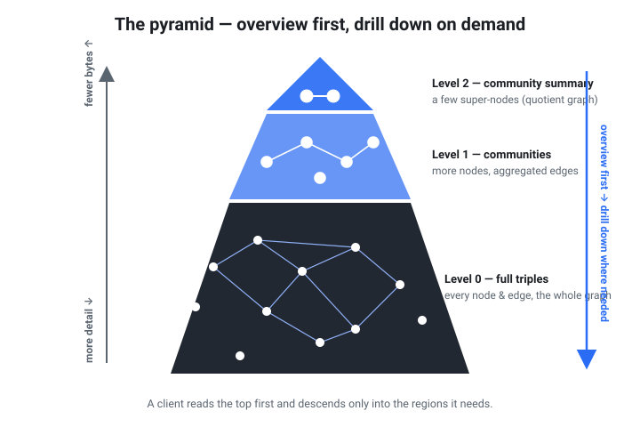

Back to API and technical reference
Rete — a cloud-native, range-queryable RDF graph file
Status: Format generation 2 (header byte 0x07), written by every writer; 0x06, the same generation one step earlier, and generation 1 (0x05, frozen 2026-07-14) is read, never written (§4.9). No compatibility promise before 1.0.0 · File extension: .rete · Header magic: RETE
One file. Put it on S3, GitHub, or any HTTP server that honors
Range. Give a client the URL. Run SPARQL. No database server.Like Parquet for tables and PMTiles for maps — but for RDF graphs, with a pyramid of progressively-refined detail.
1. Goals & non-goals
Goals
- Single immutable file, queryable in place over HTTP
Rangerequests. - Bounded request count to answer a query — the client reads the first 128 KiB (the header, the root block with every section's byte range, the card, the statistics and, on a small file, every leaf directory), then fetches only the leaves and payload a query touches (§4.6).
- SPARQL evaluation against the file (BGPs, joins, filters, paths, aggregates, named graphs, and the supported query forms in §8).
- Progressive / pyramidal access: a coarse summary graph loads first, and the client refines by "zooming into" regions of interest.
- WASM-friendly: the same query core runs in a browser and in a CLI.
- RDF-faithful: IRIs, blank nodes, literals (with datatype + language tag), and named graphs (quads).
Non-goals
- Mutation. The file is build-once / read-many; this buys aggressive
compression and CDN caching. Updates happen around the file, not in it:
rete serveaccepts SPARQL Update into an append-only journal beside the base and publishes the merged state as a fresh.retesnapshot (see cli); an in-file overlay section remains future work. - Full SPARQL 1.1 on day one. We stage it (see §8).
- Unrestricted inference. Query-time entailment supports a defined subset; see Reasoning for query rewriting and build-time materialization.
2. Prior art we build on
| Source | What we take |
|---|---|
| HDT (Header-Dictionary-Triples) | Dictionary + bitmap-encoded triples; the closest existing queryable single-file RDF format. We extend it toward range/progressive access. |
| PMTiles | Header → root directory → leaf directories → data, all byte-range addressable, with a bounded number of requests. This is the spine of our pyramid + index. |
| Parquet | Footer metadata, blocks ("row groups"), and per-block min/max "zone maps" enabling pushdown / block-skipping. |
| FlatGeobuf | Packed static index (R-tree) co-located in the file for streamable spatial queries; our analog indexes graph locality. |
Oxigraph (oxrdf, spargebra, oxttl) | Reuse RDF model, SPARQL parser, and algebra rather than writing our own. |
3. Conceptual model
An RDF dataset = a set of quads (subject, predicate, object, graph).
Three transformations make it range-queryable:
- Dictionary encoding — every IRI / literal / blank node ⇒ a dense integer ID. Triples become integer triples; the dictionary is stored once, compressed.
- Permutation indexes — store the integer triples sorted in six orders by default (SPO, POS, OSP, SOP, PSO, OPS) so any triple pattern resolves to a contiguous scan with its bound components leading. Three of them (SPO, POS, OSP) carry that routing on their own and are always present; the other three are optional (§6) and buy sort-merge joins.
- Pyramid (community summarization) — partition nodes into a hierarchy of communities. Level 0 is a quotient graph (communities as supernodes, with aggregated edges). Each deeper level expands supernodes into their members.
4. File layout
The current layout is format 0x07, stable generation 2 (0x06, its
predecessor, is still read; §4.10 lists what 0x07 changed). Everything a
reader needs to plan a query sits at the front of the file, inside the
first read: a 128-byte header, the root block, the Dataset Card, the planner
statistics and every leaf directory. The payload follows, clustered by
section. The payload blocks themselves (dictionary chunks §5.1, permutation
tiles §6.1–6.2, quad tiles §6.5, label blocks §6.4, text postings §6.3) are
byte-identical to generation 1; only their framing and their directories
moved. rete convert turns a 0x05 or 0x06 file into a 0x07 one by
copying them (§4.9, §4.10, cli).
0 HEADER, 128 B: counts, codecs, presence bits, card and root
digests, content hash (§4.1)
128 ROOT BLOCK: the section table (kind, offset, length, digest)
and the directory roots (§4.2)
CARD REGION: card | build record | free space (§4.4)
front_base FRONT SECTIONS: stats + schema, then the leaf directories of
the dictionary, the index, the quad index, the label index and
the text index (§4.3), then the label index's root node (§6.4)
data_offset DATA SECTIONS, clustered: dictionary chunks, index tiles, quad
tiles, label blocks, text postings, community pyramid (§4.5),
and last the card annex when there is one (§4.4)
file_len - 8 FOOTER: 07 00 00 00 "RETE"
front_base = 128 + root length + card region length. A reader's first
request is bytes=0-131071 (§4.6); it holds the header, the root, the card and
the statistics of every measured file, and on a small file every leaf directory
as well. In 0x06 the label index's root node sat in the root (37 KiB of
OpenCitations Meta's 41 KiB root, 47 KiB of OpenAIRE's 48 KiB: it is
incompressible); 0x07 moves it out (§4.10), so the root is the section table
and the small unit roots.
4.1 Header (128 bytes, little-endian)
| Offset | Size | Field |
|---|---|---|
| 0 | 4 | magic RETE |
| 4 | 1 | format version: 0x07 (written), or 0x06 (read, §4.10) |
| 5 | 1 | flags: bit0 named graphs (in the quad index, §6.5); bit1 RDF-star quoted triples; bit2 the text index also covers the named graphs' literals (§6.3); bit3 quad tiles are clustered graph-major (§4.5); bit4 0x07: the subject-leading permutations and the quad index's SPOG are clustered by class (§6.6); bit5 0x08: the subject-only dictionary section has chunks with no stored body, derived from the index (§5.3) |
| 6 | 2 | header length (128) |
| 8 | 16 | content hash (§4.7) — also an ETag-like id |
| 24 | 8 | file length (a client needs no Content-Range and no HEAD) |
| 32 | 4 | root block length (it starts at 128) |
| 36 | 4 | card region length (it starts at 128 + root length) |
| 40 | 8 | data offset: where the data region starts |
| 48 | 8 | statement count (quads, default graph included) |
| 56 | 8 | term count |
| 64 | 8 | named-graph count |
| 72 | 1 | permutation mask: bit i = permutation i of SPO, POS, OSP, SOP, PSO, OPS is stored. Explicit, never 0; it must contain SPO+POS+OSP (0b000111) |
| 73 | 1 | dictionary codec id |
| 74 | 1 | block codec id (tiles, quad tiles, label blocks, postings) |
| 75 | 1 | internal codec id (root units, leaves, card, stats + schema) |
| 76 | 1 | community pyramid levels (at most 255) |
| 77 | 1 | term-id widths, four 2-bit fields from the low bits: subjects, objects, predicates, graphs. 0 = u32, 1 = u64, 2–3 reserved (a corrupt header). Every writer stamps 0 today and errors rather than truncate an id; this reader refuses any non-zero field at open |
| 78 | 2 | presence: bit0 text index; bit1 the text index leaves some predicates out (§6.3); bit2 label index; bit3 stats + schema; bit4 community pyramid; bit5 quad index |
| 80 | 4 | card offset, within the card region |
| 84 | 4 | card length (stored, compressed) |
| 88 | 16 | card digest: BLAKE3 of the stored card, first 16 bytes |
| 104 | 4 | build record offset, within the card region |
| 108 | 4 | build record length |
| 112 | 16 | root digest: BLAKE3 of the root block, first 16 bytes |
The format allows a width per position (a hybrid file, say u64 objects over
u32 everything else) so readers can specialise later without another format
change; today's reader supports u32 only. The width byte is part of the
hashed header fields (§4.7).
Every field is untrusted. A reader checks the magic, the version, the header
length, 128 + root length + card region length ≤ data offset ≤ file length,
that the card and the record lie inside their region, that the mask is legal,
and that the file length is the resource's length (a truncated download fails
here, by name).
The card's place and digest live in the header, not in the root, so a re-card rewrites the card region and these 128 bytes and nothing else (§4.4).
4.2 Root block
u8 version (1)
u8 n, the number of sections
n × 38 B kind u8 · flags u8 (0) · max block u32 · offset u64 · length u64
· digest [16]
u32 length L of the unit roots
L B the unit roots, compressed with the internal codec:
repeated tag u8 · varint length · payload
A section's offset is relative to its region: a front section's (kind
< 16) to front_base, a data section's to the data offset. No offset is
absolute, so moving a region (a copying re-card that grows the card region)
changes no digest. A section's digest is BLAKE3 of its stored bytes, first
16 bytes. Its max block is the largest decompressed block in it — a
dictionary chunk, a tile, a leaf, the stats + schema body — as the writer
measured it (from the zstd frame header, or by decoding), 0 when not
recorded (label blocks and nodes, postings, the pyramid). A reader checks each
frame header against it before decoding and caps the output there, so a
corrupt or hostile frame cannot make it allocate more than the writer did;
where it is 0, the cap is 4 MiB, and the root units and the card have fixed
caps of 16 MiB and 64 MiB. The table lists the sections present, in file
order:
| Kind | Name | Region | Contents |
|---|---|---|---|
| 1 | schema | front | the stats + schema section (§7.5 encoding: the planner's per-predicate statistics and characteristic sets, the class hierarchy, rollups and axioms), compressed |
| 2 | dict-leaves | front | the dictionary's chunk directory, in leaves |
| 3 | index-leaves | front | every permutation's tile directory, in leaves |
| 4 | quad-leaves | front | the quad index's graph directory (§6.5), then its tile directories, in leaves |
| 5 | label-leaves | front | the label index's directory nodes (§6.4) |
| 6 | text-leaves | front | the text index's token table, in leaves |
| 7 | label-root | front | 0x07: the label index's root node (§6.4), stored as the label index encodes it (already compressed), after every other front section; read only when a label search runs |
| 16 | dict | data | dictionary chunks: predicates, shared, subject-only, object-only |
| 17 | index | data | permutation tiles: SPO, POS, OSP, SOP, PSO, OPS (those the mask stores) |
| 18 | quad | data | quad tiles (§4.5) |
| 19 | labels | data | label data blocks, in key order |
| 20 | text | data | postings, in token order |
| 21 | pyramid | data | the community pyramid-meta (§7.3); optional and cold, only the overview reads it |
| 22 | card-annex | data | 0x07: the card fields too big for the hot card (§4.4), the internal codec over a JSON object; optional, cold, always the last section |
A reader ignores a kind it does not know (verify still checks its digest),
except that a 0x06 file has no kind 7 and no kind 22: a reader refuses one
that does.
The unit roots are the first level of every two-level directory, plus the
small fixed facts that would otherwise cost a read. Tags: 1 dictionary, 2
index, 3 quad index, 4 label index, 5 text index, 6 class clusters (0x07, only when header flag bit4 is set), 7 derived IRI families (0x08, only when header flag bit5 is set). All integers are
unsigned LEB128 varints, byte strings are length-prefixed.
- Dictionary (always four sections, in the order shared, subject-only,
object-only, predicates): term count, then in
0x08the five group counts (§5.2: blank nodes, IRIs, text literals, typed literals, quoted triples; they add up to the term count), restart interval, chunk count, the section's offset and length withindict, then per leaf: entry count, offset and stored length withindict-leaves, the first chunk's first run, its data offset within the section, and its separator key (a separator in the section's order, §5.2). - Index (one per stored permutation): permutation number, tile count, the
permutation's offset and length within
index, then per leaf: entry count, offset, stored length, the first tile's lowest and the last tile's highest leading id, and the first tile's offset within the permutation. - Class clusters (
0x07, flag bit4): the number of clustered orders, and per order: its number (0SPO,3SOP, the section index of a default-graph permutation;6, the quad order number of SPOG), the number of classes k (at most 32), the k class ids (object ids, run 1 first), and the tile count of each of the k + 1 runs, run 0 first (§6.6). The runs partition the order's tiles, in order; no leaf of the index unit root (or, for SPOG, of the quad unit root) spans two runs. - Derived IRI families (
0x08, flag bit5): the number of families, and per family: the number of holes n, the first literal piece, then per hole its predicate IRI, its object-IRI prefix and the literal piece after it, then the number of runs and each run's first chunk and chunk count (§5.3). - Quad index: graph count, quad count, graphs per directory block (1,024 in
0x06, 8,192 in0x07), the block indexP0(§6.5), the graph directory's length, then per order: order number, tile count and per leaf: entry count, offset, stored length, the first tile's first key, the last tile's last key, and the first tile's offset withinquad. The order numbers are the declaration of the order set:0to5are the graph-leading ordersG+SPO,G+POS,G+OSP,G+SOP,G+PSO,G+OPS(the permutation's section index), and6,7,8the graph-lastSPO+G,POS+G,OSP+G(0x07). A key is(g, a)in a graph-leading order and(a, b)in a graph-last one (§6.5). A0x06file declares the file's permutation set with aG+before each; a0x07file declares0, 6, 7, 8and no other (--permutationsis the default graph's alone), and a reader reads whatever set the root declares that holdsG+SPO. - Label index: the length of the data blocks, then the section's 32-byte
preamble (digest zeroed), as §6.4 encodes it.
0x06followed the preamble with the root node; in0x07the root node is thelabel-rootsection, whose offset, length and digest are its entry in the section table (the root's pointer to it), and whose length is the preamble'sroot_len. - Text index: the scope block (§6.3; empty for the default scope), token count, then per leaf: entry count, offset, stored length and its first token.
4.3 Leaf directories
A leaf is one block of consecutive directory entries, compressed with the internal codec. Entries are rows of varints:
- dictionary chunk: the first run (a delta against the previous entry, absolute for the leaf's first), the separator key (§5.1), the chunk's stored length. Chunks are contiguous, so their offsets are implicit.
- index tile: the lowest leading id (a delta), highest minus lowest, the stored length; after every entry of the leaf, the synopsis columns (§6.2): lowest b, highest minus lowest b, lowest c, highest minus lowest c.
- quad tile: first graph (a delta), first a, last graph minus first
graph, last a,
stored length × 2 + raw, the four synopsis varints, and (in0x06) an offset code:0when the tile follows the previous one, else its offset withinquadplus one (graph-major clustering interleaves the orders). In a graph-last order (0x07) the first two fields are the first tile row's(a, b)and the next two the last row's, "graph" above reading "first column"; the synopsis is(min c, max c, min g, max g).0x07is order-major, so a tile always follows the previous one and the offset code is not written. - text token: bytes shared with the previous token, the rest
(length-prefixed), the posting list's offset and length within
text. - label nodes are §6.4's level-1 nodes, unchanged. Their offsets are those
of the generation-1 section body: data blocks first (
labels), nodes after (label-leaves), so the reader maps one onto the other.
The writer cuts each directory into leaves of 16 KiB of entries (uncompressed). A leaf is a cold lookup's unit of transfer, so leaves stay small and the root carries the leaf lists. They grow, up to 64 KiB, only to bring the stored root under 40 KiB, and only if one leaf per directory would get it there: a root that is over budget for another reason (the graph directory's block index, in a file with tens of millions of graphs) is not made smaller by bigger leaves, which would only make every lookup read more. The leaf lists add at most 256 KiB to the root of one leaf per directory; past that, every directory's leaves double beyond 64 KiB. (Until 0.5.5 the writer doubled the largest directory's leaf size while the root exceeded 40 KiB, with no ceiling, so a big file ended with one leaf per directory: 0.7 to 1.3 MB read by the first lookup.) Readers need no change; a file written either way reads the same. A leaf is faulted on first use and kept for the session.
4.4 Card region and re-card
The card region holds the Dataset Card (JSON compressed with the internal
codec) and the build record (raw JSON, possibly followed by ASCII spaces up to
its length, as in §4.9), each at the offset and length the header gives,
relative to the region; the rest is free. The writer sizes the region
2 × (card + record) + 8 KiB when it writes a card, the record alone when it
writes none (that space is in the first 128 KiB the open reads, where slack
would push the leaf directories out of it, so a file with no card is re-carded
by a copy), and 0 when there is neither. The card is inside
the content hash; the build record is not (it records when, how and how fast,
which differ between two builds of the same data). Every writer leaves a
record, a cardless one included; its front_end field says which one.
rete recard --in-place writes the new card and record into a free gap of the
region beside the old pair, syncs, then rewrites the 128-byte header — one
sector, the commit point — and syncs again. No data byte is read or moved, and
a crash before the header write leaves the old file whole. When the pair does
not fit, the file is copied once instead: a new front with a fresh region, then
the data region byte for byte (its digests, and so the root, unchanged). A card
equal to the current one stays where it is, so a record-only update
(card-audit --write-costs) never changes the content hash.
A file shorter than 1 KiB is padded to 1 KiB inside its card region.
Card annex (0x07). The hot card is what every reader fetches on every
open, so its two open-ended authored fields, description and extra, stay
under 8 KiB each. A card that has a field past that (the OpenCitations Index
card's extra is 13 KB: 114 source checksums) keeps it in the annex, a
cold section (kind 22) that only rete card --full, rete card-url --full and
rete_core::read_card_full_ranged read. The writer moves a field whole: the
annex is a JSON object whose keys are the moved fields, and the hot card has no
such field but a marker, "annex": {"fields": ["extra"], "bytes": N}, so a
reader knows there is more. The annex is the last data section, so its digest is
in the root's section table and inside the content hash through the root
digest, and verify checks it. The input side is a cap, not a flag: the CLI
accepts up to 1 MiB for each of the two fields (CARD_ANNEX_FIELD_MAX_BYTES)
and the format layer moves whichever is over 8 KiB; the library's
CardInput::normalize keeps the 8 KiB rejection, and
normalize_with_annex is the 1 MiB one.
A re-card that keeps the annex unchanged (--keep-curated of a card whose
fields did not change, or a record-only update) is in place as before. One that
changes, adds or removes the annex rewrites the file's tail and the section
table entry, hence the root digest: that is a copy (a new front, the data region
byte for byte up to the annex, the new annex, the footer), never an in-place
write, because the header alone is the commit point of an in-place re-card. A
0x06 file has no annex: re-carding it with a field over the cap fails and says
to rete convert first.
4.5 Data region
The data sections follow the front in the order of the kind table, each one contiguous, with nothing interleaved: no container prefixes, no directories, no synopsis trailers, no restart tables. Dictionary chunks go predicates first, so the predicate routing every query needs is one short range. A scan of one permutation, or of one predicate's run in POS, is one contiguous range.
Quad tiles are clustered one of two ways in 0x06, and header flag bit3 says
which:
- graph-major — for each block of graphs of the graph directory, the tiles
of every order whose first graph falls in it, side by side, so a
GRAPH <g>query finds the graph's slice in every order in one neighbourhood; - order-major — each order's tiles contiguous, as in generation 1.
The 0x06 writer chooses graph-major when the mean named graph is smaller than
64 KiB of quad tiles, else order-major (rete convert --quad-clustering
overrides it). 0x07 is order-major, always, and flag bit3 is never set
(§6.5 gives the reason). Readers route through the directories either way.
4.6 Opening a file
- Read
min(128 KiB, file length)from offset 0. Over HTTP this isGET bytes=0-131071, which also gives the length (Content-Range, whose start, end and total must all match); noHEADis sent. A remote file of at most 8 MiB is then fetched whole in one more read. Byte 4 picks the reader:0x05continues with the generation-1 open (§4.9), served from these bytes where it can. 0x06or0x07: parse the header; take the root (and in the rare case it does not fit, read the rest of it); check the root digest; decode the section table and the unit roots. The card, the record and the statistics are in hand, and so is every leaf inside the first 128 KiB.- A query faults the leaves it needs, then the payload. The dictionary and the index route through the unit roots to a leaf, then to a chunk or a tile. Sequential dictionary misses read ahead (2, 4, 8, up to 16 chunks a batch); the result terms of a query decode in one batch across sections.
A local file opens the same way through the file's range reader; a query command reads it whole only when it is at most 1 MiB.
Directory leaves are not shared between permutations. Pairing them (SPO with
SOP, POS with PSO, OSP with OPS, as an August 2026 experiment did) was measured
against this layout: it changes no round trip of the 83 measured runs or of the
Meta projection, the predicate pair grows by 39–44%, and convert would have
to re-tile every permutation instead of copying its tiles.
4.7 Content hash and verify
content hash = BLAKE3("rete/0x08" ‖ header[4..8] ‖ header[48..80]
‖ card length (u32) ‖ card digest
‖ root length (u32) ‖ root digest)[0..16]
("rete/0x07" and "rete/0x06" for a 0x07 and a 0x06 file.) header[4..8] is the version, the flags and
the header length;
header[48..80] the counts, the mask, the codecs, the pyramid levels and the
presence bits. Through the root digest the hash covers every section digest, so
every byte of every section; through the card digest, the card. It hashes no
offset and not the build record, so two builds of the same input and flags hash
the same, and a re-card hashes nothing but the card.
rete verify checks the header's bounds, the root and card digests, streams
every section once against its digest and recomputes the content hash. A
failure names the section. rete verify --section <name> checks one section
(names as in the kind table).
The writers are reproducible: the in-RAM build, the memory-bounded build,
merge and convert write the same bytes for the same input and flags, and
convert of a generation-1 build equals the generation-2 build byte for byte.
4.8 What generation 2 dropped
- The 1024-byte header and its 40-entry directory: a 128-byte header and an unbounded section table in the root.
- Length-prefixed containers, dictionary restart tables, tile directories at the head of each permutation, synopsis trailers, and directory reads by probing.
- Sections outside the content hash with self-digests (kinds 8, 9, 11), and the quad index's seal in the index container: every section is inside the one hash.
- The card in two places, and dead bytes after an in-place re-card.
- Per-graph named graphs (kind 5): the quad index is the only named-graph
layout.
convertre-encodes a per-graph file as a quad index. - The kind 6 / kind 11 split of the text index: one text section, its scope in the root, presence bit1 for a predicate-restricted index.
- The synopsis flag: synopses are always present.
4.9 Generation 1 (0x05): legacy, read only
Every reader reads generation 1, and no writer writes it. The rest of this section is its layout, unchanged; the section encodings of §5–§7 are shared by both generations.
The generation-1 layout (what write_file/write_dataset emit before
rete convert). The
header is the directory: it carries the absolute offset+length of every section, so a
client finds everything from the first 1 KB read — no separate directory or
metadata block to chase.
![The section directory inside a .rete header, drawn to scale on the published davidrumsey.rete. The header is 1024 bytes: a 64-byte core, then up to 40 directory entries of 24 bytes each starting at byte 64, then zero padding — this file uses 6 entries, so most of the header is spare room. One entry is a 2-byte kind, a 2-byte flags field, 4 reserved bytes, an 8-byte offset and an 8-byte length. The seven typed kinds are dataset card, dictionary, index, pyramid, named graphs, text index and build info; this file has all but named graphs and build info. One GET of bytes 0 to 1023 therefore locates every section in the file.](img/file-layout-0x05.svg)
The header is the directory, on a real specimen. Entry i lives at 64 + i×24;
a kind the reader does not recognise is kept verbatim, so a new writer cannot
break an old reader.
![Anatomy of a .rete file, drawn to scale on the real dblp.rete — 2.27 GB, 179,328,188 triples, 64,276,736 terms. A 1 KiB header carries a 64-byte core and a directory of 24-byte entries; then a 731-byte dataset card, the front-coded dictionary (413 MB, 18.2%), and six permutation indexes cut into roughly 64 KiB tiles with a per-tile min/max synopsis (1.85 GB, 81.8%). The file ends in a 4-byte RETE magic that a truncated download cannot fake. This specimen has no pyramid, named graphs, text index or build info — those section kinds are optional, and the directory simply does not list them.](img/rete-anatomy.svg)
The layout on a real specimen (dblp.rete, 179 M triples): the dictionary and the six permutation indexes carry nearly all the bytes; everything a reader needs to route a query — header, directory, card — fits in the first two range requests. This file carries none of the four optional sections, and the figure says so.
The header is the directory: a single 1 KB read carries the offset and length of every section. The ASCII below is the precise reference.
┌──────────────────────────────────────────────────────────────┐
│ HEADER fixed-size, 1024 bytes, read first. │
│ A typed section directory: the offset+length of every │
│ section below, plus codec ids, counts, content hash. │
├──────────────────────────────────────────────────────────────┤
│ DICTIONARY front-coded container of four sections: │
│ ├ shared (terms used as both subject & object) │
│ ├ subjects-only │
│ ├ objects-only (incl. literals) │
│ └ predicates (graph IRIs: NAMED GRAPHS, or subject terms) │
├──────────────────────────────────────────────────────────────┤
│ INDEX default-graph permutation container: │
│ SPO/POS/OSP/SOP/PSO/OPS streams, each a zone-mapped, │
│ delta-coded, (optionally zstd) block. Via `root_dir_offset`. │
├──────────────────────────────────────────────────────────────┤
│ PYRAMID META summary superedges (community quotient graph)│
│ + optional per-community tiles. Pointed to by pyramid fields.│
├──────────────────────────────────────────────────────────────┤
│ NAMED GRAPHS optional: (graph IRI, permutation container) │
│ per named graph, sharing the dictionary. Quads only. │
│ — or QUAD INDEX (kind 10, §6.5): each named-graph quad once, │
│ the graph as a 4th column of graph-leading permutations in │
│ shared tiles, behind a sorted graph directory. │
├──────────────────────────────────────────────────────────────┤
│ FOOTER 4-byte `RETE` magic — a format/integrity │
│ sentinel (the directory is the header). │
└──────────────────────────────────────────────────────────────┘
Each permutation section carries its own tile directory (format 0x02,
§6.2): byte ranges for independently-compressed tiles, keyed by leading-id
range — so single-pattern routing fetches the selected permutation section (one
of the six) and decompresses only the matching tile(s). Per-community leaf directories
(mapping (level, tile, perm) to byte ranges across the pyramid) are part of
the fuller design and remain future work (see docs/BENCHMARK.md).
Header (1024 bytes, little-endian), generation 1
The header is a fixed 64-byte core followed by a typed section directory —
up to 40 entries of 24 bytes each (kind, flags, offset, length) — zero-padded to
1024. A new top-level section is added as a new directory entry, so the header has
room to grow without a layout reshape. Format byte 0x05 is stable format
generation 1, frozen on 2026-07-14 and first released in Rete 0.3.0. It
fixes this 1024-byte section-directory header and the six-wide permutation
addressing — how many of those six a given file actually stores is its
permutation mask (byte 50, §6), not its generation. Experimental formats
0x01 through 0x04 are not readable and must be rebuilt from RDF source.
There is no Rete 1.0.0. The generation number counts format generations and is independent of the release version (the workspace remains 0.x); the Rust, CLI and WASM APIs are the surfaces waiting on 1.0.0, not the file format. See Compatibility.
Core (bytes 0..64):
| Offset | Size | Field |
|---|---|---|
| 0 | 4 | magic RETE |
| 4 | 1 | format version (0x05, stable generation 1) |
| 5 | 1 | flags (bit0: has named graphs/quads; bit1: tile-synopsis trailer; bit2: contains RDF-star quoted triples; bit3: the named graphs live in the quad index, §6.5; bit4: the text index also covers the named graphs' literals, --text-index-graphs all, §6.3 — Rete 0.4.0, ignored by older readers) |
| 6 | 2 | header length (= 1024) |
| 8 | 16 | content hash (blake3, first 16 bytes) — also an ETag-like id |
| 24 | 8 | total quad count |
| 32 | 8 | total term count |
| 40 | 2 | number of pyramid levels |
| 42 | 1 | dictionary codec id |
| 43 | 1 | block codec id (e.g. zstd) |
| 44 | 2 | section count (entries in the directory) |
| 46 | 4 | schema-pyramid block length (u32, 0 if none) — the trailing schema block within pyramid-meta, fetched at pyramid_meta_offset + pyramid_meta_len − this for an index/dictionary/summary-free schema-coherence read |
| 50 | 1 | index permutation mask (§6): bit i = permutation i of SPO, POS, OSP, SOP, PSO, OPS is stored. 0 means all six — the canonical spelling, so a full build is byte-identical to every file written before this byte was defined. A mask must contain SPO+POS+OSP (0b000111); anything else is rejected at header parse |
| 51 | 13 | reserved (zero) |
Section directory (bytes 64…, section_count entries of 24 bytes):
| Offset | Size | Field |
|---|---|---|
| +0 | 2 | section kind (1 metadata, 2 dictionary, 3 index, 4 pyramid-meta, 5 named-graphs, 6 text-index, 7 build-info, 8 label-index, 9 schema, 10 quad-index (§6.5), 11 text-index restricted to some predicates (§6.3); other ids reserved for future sections) |
| +2 | 2 | section flags (reserved) |
| +4 | 4 | reserved (zero) |
| +8 | 8 | section offset |
| +16 | 8 | section length |
A reader maps known kinds to its named accessors and preserves unknown kinds verbatim (so a newer writer's sections survive an older reader). A kind absent from the directory means that section is not present.
Rationale: a fixed 1024-byte header means one small range read (
bytes=0-1023) tells the client where every section lives, with headroom for new sections (group directories, geo indexes, …) as new directory entries rather than a format break — the optional text-index section (kind6, §6.3) was added exactly this way.
The metadata section (kind 1) is 0-length by default. When present it
carries an opaque, application-defined payload — the CLI stores a JSON
Dataset Card there. Its bytes are included in the content
hash (so verify covers it), and a range-reading client never fetches it for a
query (it reads sections by their header offsets). A reader that doesn't
understand the payload simply skips it: every section is located through the
directory, never by its position relative to another.
It sits in one of two places, and a reader must accept both:
- between the header and the dictionary — what the in-RAM build and
repyramidwrite (andmergeup to 0.4.0); - after every other section, just before the footer — what the
memory-bounded build and
mergewrite (their full card is derived from the finished file's sorted sections, so it exists only once they are on disk) and whatrete recard --in-placewrites (it appends the new card instead of copying the file).
The content hash does not depend on where it sits: it folds the metadata section
first, then the other hashed sections in their fixed order, wherever each one
lies — so the same card on the same data hashes the same at the front or at the
end. A file re-carded in place can also hold dead bytes: the old card and
build-info sections, and the old 4-byte footer, which no directory entry points
at any more. They are not part of the file's content (no section, no hash) and a
copying re-card drops them. The file's length is still the furthest
offset + length in the directory plus the footer.
Every reader since generation 1 locates the card this way: rete card,
card-url, verify and queries of 0.3.7 and 0.4.0, and the 0.4.0 Python and
JavaScript packages (local and remote), read a file whose card sits after the
data the same as one whose card sits at the front.
The build-info section (kind 7) is an optional opaque payload laid out
immediately after the metadata section, wherever that is — adjacent, so a
card reader fetches metadata + build-info in one coalesced range and the CARD
tier stays at one header read plus one range read. The CLI stores
build-conditions JSON there:
build timestamps, the engine (version, commit, target, features), the flags in
force, the inputs (file names and BLAKE3 digests), statement counts, per-phase
timings and peak memory, and measured starter-query costs (see
Dataset Cards).
A file converted from 0x05 carries a conversions list: one entry per
rete convert (the engine, the time, the command and flags, and the source's
format version, content hash, size and file name), spliced into the source's
own record, which is kept byte for byte up to its closing brace; a source without a record gets one that holds only the
conversion.
Since 0.4.0 the JSON may be followed by ASCII spaces up to the section's
length: the writer reserves the record's widest form before the build has
finished and fills it in place afterwards. JSON allows trailing whitespace, so
a reader parses the payload as it is. Unlike every other section its
bytes are deliberately excluded from the content hash: it records exactly
the facts that differ between two builds of identical data (when, by which
binary, how fast), and the reproducible-hash property — two builds of the same
input hash identically — must survive them. verify therefore does not cover
it, on old readers (which see an unknown kind-7 entry and ignore it) and new
ones alike; treat its contents as advisory provenance, not integrity-protected
data.
The label-index (kind 8, §6.4) and schema (kind 9, §7.5) sections are
optional and were added after the generation-1 freeze. They are laid out after
every other section, just before the footer, and — like build-info, for a
different reason — they are outside the content hash. An older reader's
verify folds in only the kinds it knows, so a hashed kind 8 or 9 would make every
older rete verify report a new file as corrupt. Each section therefore starts with
a 16-byte BLAKE3 digest of the rest of the section (blake3(section[16..]),
first 16 bytes), which a current verify checks besides the content hash. Both are
pure functions of the data and the build flags, so the reproducible-hash property
holds, and a file gains or loses them without changing its content identity (the
content hash identifies the data, the card and the generation-1 indexes). A reader
that predates them keeps their directory entries verbatim, shifts them on every
header rewrite like any unknown kind, and never reads them; it answers every query
with the same rows, but finds no label index, no schema and no planner statistics
in a file whose pyramid-meta no longer carries them (§7.3).
A predicate-restricted text index (kind 11, §6.3) follows the same rule,
although it sits where a kind-6 index does: it is outside the content hash and
starts with the same 16-byte self-digest, which a current verify checks. A
reader older than 0.4.0 does not know kind 11, so a hashed one would make its
verify call the file corrupt. A kind-6 index is hashed, as it always was.
The quad index (kind 10, §6.5) is hashed by reference: it is not a
range of the content hash itself, but its BLAKE3 digest is the seal, the last
section of the index container (kind 3), which is — so it stays part of the
file's identity, a current verify checks it against the seal, and an older
verify (which refuses to open such a file anyway, on the seal) still passes.
4.10 Format 0x07 and compatibility
0x07 is 0x06 plus three changes; every payload block and every leaf other than the
quad index's, and every unit root other than the label and the quad ones, is
byte-identical. The same code reads both: the header's version byte says which one
a file is.
-
The label index's root node leaves the root. In
0x06the label unit root held the 32-byte preamble and the root node, 47 KB of OpenAIRE's 48 KB root and 37 KB of Meta's 41 KB, and it does not compress. In0x07the unit root keeps the preamble (the entry count, the root's length, and the data length), and the root node is a front section of its own (kind 7,label-root, placed after the other leaves, so the statistics and the leaf directories sit nearer the front). The root's pointer to it is its table entry (offset, length, digest), and it is read, digest-checked, only when a label search first runs (the label index is already opened lazily). A search over a small file whose front is in the first read is already in hand; over a big one it costs one more request, the same bytes it used to carry in every open. -
The card annex (kind 22, §4.4).
-
The quad index's order set (§6.5).
0x06stores a graph-leading orderG+Xfor every permutation the file has (three or six);0x07stores four orders and no other:G+SPOas before, and the graph-last SPOG, POSG and OSPG, which answerGRAPH ?g { <s> ... },GRAPH ?g { ?s <p> ... }andGRAPH ?g { ?s ?p <o> }by a seek instead of a pass over the file. The set is declared by the quad unit root (§4.2), so--permutationsis the default graph's alone. The tiles are order-major (§4.5), a graph-directory block holds 8,192 graphs, and a quad tile's leaf entry has no offset code, so the root of the 2018 nanopub dump goes from 104 KB to 33 KB. -
Class clustering (optional, header flag bit4, §6.6). The default graph's subject-leading permutations (SPO and, when stored, SOP) and the quad index's SPOG may be laid out in
(class run, subject, predicate, object)order instead of subject order, so the subjects of one class are a few contiguous tiles. Off by default (--cluster-subjects-by-class); a file without the flag is byte-for-byte the file the same writer wrote before the option existed. GSPO, POSG and OSPG are untouched.
Other differences: the version byte, the footer (07 00 00 00 "RETE"), the
hash domain ("rete/0x07") and the format_version a card is stamped with
(7).
Compatibility. (As of 0x07; §4.11 is the current one.) Writers wrote 0x07
only; the reader read 0x05, 0x06 and 0x07. A reader that predates 0x07 refuses the file at the header, by name:
unsupported .rete format 0x07; this Rete build reads 0x05..=0x06. It cannot
read a 0x07 file as a 0x06 one with an unknown section, because the root's
label unit no longer holds the root node. There is no backward-compatibility
promise before 1.0.0: rete convert turns a 0x05 or a 0x06 file into a
0x07 one, copying the payload, moving the label root out of the root and keeping
the card (no annex unless a card field is over the hot cap), and, for a file with
named graphs, deriving SPOG, POSG and OSPG from the input's G+SPO tiles by one
sort pass each (external past 100 M quads) and dropping the other graph-leading
orders; the catalog is converted in step, and the 0x06 reader is removed once
it is.
4.11 Format 0x08 and compatibility
0x08 is 0x07 with one change: the dictionary's term order (§5.2). Every
other section, leaf and unit root is laid out as in 0x07, apart from the
dictionary unit root, which gains the five group counts per section (§4.2), and
the routing keys of the dictionary's chunks, which are separators in the new
order. The same code reads 0x06, 0x07 and 0x08: the header's version byte
says which order a file's dictionary is in.
Other differences: the version byte, the footer (08 00 00 00 "RETE"), the hash
domain ("rete/0x08") and the format_version a card is stamped with (8).
Compatibility. Writers write 0x08 only; the reader reads 0x05, 0x06,
0x07 and 0x08. A reader that predates 0x08 refuses the file at the header,
by name: unsupported .rete format 0x08; this Rete build reads 0x05..=0x07
(0.6.1 says exactly that). There is no backward-compatibility promise before
1.0.0, and none is possible here: a 0x07 reader would search the dictionary in
byte order and miss terms. rete convert turns a 0x05, 0x06 or 0x07 file
into a 0x08 one. Because every term gets a new id, it is a re-encode, not a
copy: the statements are walked through the source and written by the
memory-bounded builder (sorted terms, every permutation, the quad orders, the
label and text indexes, the schema and the class clusters rebuilt for the new
ids; the card, its annex and the build record kept), inside --memory-budget-mb
with its spill in --tmp-dir. A source's community pyramid (§7.3) is written as
it is, the superedges under the new predicate ids; it is not computed again.
Converting a 0x08 file again rewrites it under the current leaf policy
and gives the same bytes.
Derived IRIs (§5.3) are an optional part of 0x08: a file may drop the
bodies of subject-only dictionary chunks that its index spells out. The file says
so in header flag bit5 and root unit 7. A reader that knows 0x08 but not the
flag refuses the header by name (unsupported .rete feature), because without
the index it would read empty terms. rete convert carries derived chunks over
as they are, and rete convert and rete build find derived IRIs by
themselves (§5.3; --no-derive-iris turns that off).
5. Dictionary
![The dictionary is four front-coded sections. Terms used as both subject and object are shared and take IDs 1 to S, and the same ID means the same term in either position; subject-only and object-only terms continue at S+1 inside their own space; predicates get an independent ID space that starts again at 1. So a term's ID range alone tells you its role, with no second lookup. Every section is sorted, deduped and front-coded against the previous term, with a restart point every 16 terms giving O(log n) term-to-ID lookup, and is chunked at about 64 KiB so resolving one term faults in one chunk instead of the whole section.](img/dictionary-roles.svg)
Four front-coded sections with role-ordered IDs: a term's ID range reveals whether it is a subject, object, or predicate.
-
Terms are sorted within each kind, in the order of §5.2, and front-coded (store the shared prefix length + the suffix vs. the previous term). Cheap to compress, supports binary search for
string → id, and prefix-friendly for IRI namespaces. Up to0x07the order is the bytes of the stored token; from0x08it is the SPARQLORDER BYorder. -
IDs are assigned so that shared terms get the lowest IDs, then subjects, then objects — this lets a triple pattern know a term's role from its ID range.
Concretely (the HDT four-section scheme): let
S= #shared (terms used as both subject and object). Subject IDs are1..=S(shared) thenS+1..(subject-only); object IDs are1..=S(the same shared IDs) thenS+1..(object-only). So a shared term has one ID that means the same thing in subject and object position. Predicates and graphs occupy their own independent ID spaces. This is whatdictionary.rsbuilds on top of the §5.1 sections. -
A writer may also place object-only terms in the shared section:
rete build --frequent-objects N(off by default) moves theNobject-only terms that the most statements carry as object — classes, controlled vocabularies, status literals — into it. The section stays in term order, so a promoted term gets a small object ID wherever it sorts ahead of the shared entities, which shortens every varint that carries it (§6.1); its subject ID is never used by a statement. Readers need nothing for this, and never did:term → idconsults the shared section first for both roles, and a pattern whose subject is such a term simply matches nothing. Readers therefore must not infer from section membership that a shared ID occurs in subject position. No layout changes; every reader of format0x05reads such a file. -
Literals carry datatype IRI (as a dictionary ID) and optional language tag.
-
A string literal is stored in its canonical spelling
"x", never"x"^^xsd:string(one RDF 1.1 term). Writers since 0.4.0 canonicalize at ingest; a reader also accepts a file written earlier that stores the typed spelling, by looking a string literal up under its other spelling when its own misses. No format change: the bytes of both kinds of file are valid. -
RDF-star quoted triples (
<< s p o >>) are stored as ordinary terms: a quoted triple is interned by its canonical N-Triples-star surface, exactly like an IRI or literal, so the dictionary, the permutation indexes, and this layout need no change for RDF-star — hence no format-version bump. A file that contains any quoted triple sets the header's quoted-triples flag (§4.1: bit1; bit2 in generation 1) so a plain-RDF reader can detect it without scanning. The stored surface is RDF-star, always; which surface a text dump carries is a writer choice (rete export --quoted-triple-syntax, default RDF 1.2<<( s p o )>>) and does not touch the file. See SPARQL § RDF-star. -
The dictionary is four independently-decompressible sections (shared / subjects / objects / predicates), each with a restart-indexed table (§5.1) that supports
O(log n)term↔ID lookup once loaded. Each section is additionally chunked for ranged access (§6.2): resolving one IRI faults in exactly one ~64 KiB chunk rather than the whole section.
5.1 Section encoding (front-coded, restart-indexed)
Each dictionary kind (shared / subjects / objects / predicates / graphs) is one
section. Within a section terms are UTF-8, sorted ascending in the section's
order (§5.2), deduped, and assigned dense 1-based IDs in that order (ID 0
is reserved as "absent").
Terms are stored in runs of R entries (default R = 16, the restart
interval). Each run begins at a restart point storing the full term; the
remaining R-1 entries are front-coded against their predecessor:
restart entry: varint(0) varint(len) bytes[len] # full term
delta entry: varint(shared_pfx) varint(suf) bytes[suf] # share prefix
A small restart index (one (first_term, byte_offset) per run, the first
terms also front-coded against each other) sits at the head of the section. Both
lookups stay within one run after a binary search over restarts:
id → term: run =(id-1) / R; jump to its offset; decode forward(id-1) % Rsteps.term → id: binary-search the restart index for the candidate run; decode that run comparing each materialized term; return its ID orNone.
Restart points are also the natural chunk/compression boundaries: a client fetches just the run(s) covering the IDs/terms a query touches.
5.2 Term order (0x05-0x07 bytes, 0x08 SPARQL)
IDs are lexical ranks, so the order a section uses decides what comparing two
IDs means. Formats 0x05 to 0x07 sort the bytes of the stored token
(<iri>, _:b, "lit" with its suffix). That is not the order SPARQL's
ORDER BY uses: an IRI's closing > is above -, ., / and the digits, so
<…/Ng8130_provenance> sorts before <…/Ng8>, which is the case for every
nanopublication; a closing quote sorts "a b" before "a"; literals sort
before IRIs before blank nodes. An ORDER BY ?s over a result therefore had to
decode every key (181 MB of dictionary for the 653 k subjects of one class of the
2018 nanopub dump) to sort it.
0x08 sorts each section so that ID order is the engine's ORDER BY order
(SPARQL 1.1 §15.1: blank nodes, then IRIs, then literals) wherever that order is
a function of the term alone. A term belongs to one group; groups are
ordered as listed, and a group sorts as shown:
| group | terms | sorted by |
|---|---|---|
| 0 blank | _:… | the token's bytes |
| 1 IRI | <…> | the IRI text without < and >, by code point (= UTF-8 byte order) |
| 2 text | a simple, xsd:string or language-tagged literal | the lexical form with its escapes resolved (code point), then rdf:dirLangString < rdf:langString < xsd:string, then the language tag lower-cased, then the token |
| 3 typed | any other literal (numbers, booleans, dates, other datatypes) and anything that is no term | the token's bytes |
| 4 triple | << … >> | the token's bytes |
So <…/Ng8> sorts before <…/Ng8130_provenance>, "a" before "a b", and
"a"@en before "a". The comparison is total (two terms compare equal only if
they are the same bytes), UTF-8 byte order equals code point order, and the
empty string sorts first (a chunk directory's first key is empty).
Groups 0, 1, 2 and 4 are order-exact: two terms of one section that are in
them compare as their IDs do. Group 3 is not, because ORDER BY puts numbers
and dates by value, and the dictionary cannot. A reader that sorts by ID
decodes group 3 and compares across sections (the shared, subject-only and
object-only sections are three separately sorted lists with their own ID
ranges); it decodes only what it must. The engine's text order
(sparql::value::order_cmp) and this one are the same function on group 2, and
a test holds them to it.
The dictionary unit root (§4.2) records, per section, how many terms are in each
group. They give the ID ranges: IDs 1..=g0+g1 are blank nodes and IRIs,
..=+g2 text literals, ..=+g3 typed literals, and the rest quoted triples.
They replace the old assumption that literals are a prefix of a section: the
literal object IDs are the run after the IRIs. rete verify checks that every
section is strictly increasing in its order and that the counts are what the
terms say.
Chunk routing. A chunk's directory key is a separator k with
last(prev) < k ≤ first(this) in the section's order. Between two IRIs it
is the shortest separator of their texts written as an IRI (< + text + >);
between two text literals the shortest separator of their lexical forms written
as a simple literal; at any other boundary the first term itself. A lookup
routes and searches with the order the file's version names, and a reader must
not search a 0x08 section bytewise.
Front coding is not hurt: terms with a shared prefix stay adjacent. The 2018 nanopub dump's dictionary goes from 995,549,459 to 994,962,742 bytes (-0.06 %), the OpenCitations sample's from 26.16 to 26.03 MB (-0.5 %).
5.3 Derived IRI families (0x08, optional)
Some IRIs are a function of terms that are in the file anyway. The OpenCitations
Index names a citation https://w3id.org/oc/index/ci/<citing>-<cited>, and the
two OMIDs are the objects of the citation's cito:hasCitingEntity and
cito:hasCitedEntity triples; stored as text those names are 99.7 % of that
file's dictionary. A family says how such an IRI is built, and the file stops
storing the ones that follow it:
- a template:
n + 1literal pieces aroundnholes. The first piece starts with<and the last ends with>(a term is its token); the pieces between holes are not empty; ninputs, one per hole: a predicate IRI and an object-IRI prefix. The text of a hole is what follows the prefix in the object of the subject's triple with that predicate, which must be one IRI under the prefix with something after it.
Nobody writes a family. The writer finds them in the data, in the same pass on
every dataset, and stores the ones it takes. For the OpenCitations Index it finds
https://w3id.org/oc/index/ci/{…/hasCitingEntity|https://w3id.org/oc/meta/br/}-{…/hasCitedEntity|https://w3id.org/oc/meta/br/}
by itself; for any other file it finds what that file spells, or nothing.
--no-derive-iris turns the pass off.
Finding families. The pass reads the subject-only section, the one section that can be derived (below), and nothing else of the file's meaning.
- Sample. 64 windows of 16 consecutive subject-only ids, spread over the whole section by a golden-ratio sequence (deterministic, and any prefix of the windows is spread too). The rows of those subjects come from PSO, or from an unclustered SPO; with neither, nothing is derived. The sample reads at most 1,536 index tiles.
- Shape of a subject. For a sampled subject, look at the predicates it has exactly one object for, and at the objects that are IRIs. The longest suffix of such an object's IRI (at least two bytes) that occurs inside the subject's own IRI is that predicate's hole; holes may not overlap, the longest wins. A hole starts at its first character that is not ASCII punctuation: a separator in front of an id belongs to the literal piece and to the prefix. What is left of the subject's IRI is the literal pieces, and the part of the object's IRI before the hole is the input's prefix. That is the subject's signature. A predicate with more than one object for the subject is never a candidate, and literal objects are not looked at: their lexical form is not their text in the file, since the N-Triples escapes of a literal and of an IRI differ, and nothing here needs them.
- Candidates. A window fits a signature when every subject in it has it. A signature's estimate is the section's stored bytes times the share of the windows it fits. The (at most four) best signatures whose estimate reaches the threshold become candidates.
- Verification. A candidate is checked over the whole section, as the next paragraph says: every term is rebuilt from the index and the object sections and compared byte for byte. A chunk in which one term does not fit stays stored, whole. The family is kept only if the chunks that did derive remove at least the threshold.
The decision rule. A family is taken when the bytes it removes are at least
5 % of the file and at least 256 KiB, and for no other reason: a derived term
costs a lookup two requests more and rete export about twice the time (§5.3,
last paragraph), so a small saving is not worth it. The rule and the numbers are
the writer's, not a setting; the only switch is --no-derive-iris. Nothing in
it names a dataset, an IRI or a predicate. The build record (key derive_iris)
and rete info say what was found: the sample, each family taken with its chunks
and the bytes it removed, and each candidate left with its reason (an estimate
under the threshold, a verification that removed too little, no PSO or SPO).
What is kept and what goes. Only the subject-only section holds derived
chunks, and only whole chunks. Every id, the section's term count, its group
counts, its restart interval and its chunk directory (every chunk's first run and
routing separator) are exactly what they are without derivation: an id is still
the rank of its term, and ORDER BY on ids is as exact as before (§5.2). What
goes is the body of each chunk whose every term the writer rebuilt from the
index and the object sections and found equal, byte for byte, and which splits
back into the same holes. The directory entry of such a chunk has stored length
0, and the root unit 7 lists the chunks as runs of the family. A chunk with
one term that does not derive stays stored, whole. A family that is not taken
is not written. Nothing outside the subject-only section is derived,
and the inputs are objects, so a derived term never needs another.
Decoding an id. Subject s is the shared count plus the id's section-local
number. For each input, read the one (s, predicate, ?) row from the index (SPO
or PSO), decode the object, strip the prefix, and fill the template. A subject
with no row or more than one for an input does not derive, and the writer has not
dropped its chunk. Every reader path does this: a batched decode (a result page,
rete export, a FILTER that reads the term) first reads the tiles of all its
ids' rows in one batch and the objects' dictionary chunks in another.
Looking a string up. The directory routes the string to a chunk as always. If
that chunk is stored, nothing differs. If it is derived, the string is split
along the template; each hole's object IRI is looked up in the dictionary; the
subjects of the first input's (?, predicate, object) rows that lie in the
chunk's id range are the candidates, and the first one whose other inputs also
hold is the id. A string that does not fit the template, or names an IRI the file
does not have, is absent. The writer checked that the split of a derived term is
the holes it was built from, so this finds every one.
rete verify rebuilds every dropped chunk and checks the terms like any other:
strictly ascending in the section's order, the routing separators, the group
counts. rete info lists each family, its template and how many chunks it
dropped. The one-pattern ranged query (Rete::query_ranged, which reads the
whole dictionary in one request and holds no index) refuses a file with derived
chunks by name; every other reader, the browser's among them, reads it.
The cost moves from the dictionary to the index. A list of the works that cite
one work reads the citation names from the rows the query reads anyway and no
longer one dictionary chunk per citation; a lookup of one citation by name reads
the two OMIDs' chunks and the tiles that hold its rows instead of its own chunk
(measured on a sample in the pull request that added this, and in
dev/session-notes/DICT-DERIVED-IRIS.md).
6. Triples / quads
![Three of the six permutation indexes answer every SPARQL triple pattern: SPO serves the four patterns with a bound subject or nothing bound, POS the two with a bound predicate and unbound subject, OSP the two with a bound object and unbound subject and predicate. The other three — SOP, PSO, OPS — route nothing; their only job is to hand a merge join a stream already sorted on the join column. Measured on tree-city-inventory.rete built without a pyramid, the three routing indexes are 7.52 MB and the three optional ones 9.82 MB, so building with rete build --permutations 3 drops 50.5 percent of that file — and 36.8 percent of a literal-heavy one such as davidrumsey.](img/index-permutations.svg)
Which pattern reaches which index, and what the other three actually buy. The
routing three are measured on tree-city-inventory; the optional three are the
bigger half, because a sort order that does not lead with a subject or predicate
prefix compresses worse.
- Stored as integer triples in SPO, POS, OSP and, by default, also SOP,
PSO, OPS (stable format
0x05; experimental0x03stored only the first three). Which orders a file carries is recorded in the header's permutation mask (byte 50;0= all six) and is fixed at build time byrete build --permutations 3|6. The default is six.- The first three match any of the eight triple-pattern shapes, and they do
so at the same longest bound prefix the full six achieve on every one of
those eight — enumerated in
index.rs'sperm_routing_never_leaves_core. So routing, the tiles fetched, and the rows returned are identical either way; the choice is invisible from a query's results. - The full six additionally sort the triples on every prefix of columns, so for any bound prefix and any free column there is a permutation that routes on the prefix and streams sorted on that column — the precondition a sort-merge join needs (both inputs co-sorted on the join key). Exactly three of the twelve (bound-set, join-column) shapes lose that stream with three permutations: subject-bound sorted on object, predicate-bound sorted on subject, object-bound sorted on predicate. The planner then declines the merge seed and hash-joins, which is a slower plan, never a wrong one.
- The cost is ~2× the index payload: measured at 36.8% of a built
literal-heavy file (
davidrumsey, 5.00 M triples) and 50.5% of a short-term-heavy one (tree-city-inventory, 3.15 M triples) — the two builds tabulated in BENCHMARK.md. - A file with fewer than six permutations is not readable by a Rete that
predates the mask. Such a reader passes six to the index container's
section-count check and gets
malformed container: expected 6 permutation sections(resident) orunexpected container section count(ranged), exit 1, on every command that touches the index — a loud refusal, not a wrong answer. Itsinfo,verifyandcard-urlstill work, because they read only the header and the metadata section.
- The first three match any of the eight triple-pattern shapes, and they do
so at the same longest bound prefix the full six achieve on every one of
those eight — enumerated in
- Each permutation is encoded as an adjacency / bitmap-triples structure (HDT-style): for SPO, a sorted list of subjects, each with its predicate list, each with its object list, delta-encoded.
- Quads (named graphs) add a
Gdimension, stored one of two ways, chosen at build time (rete build --named-graphs per-graph|quad): one permutation container per graph in the NAMED_GRAPHS section (kind 5), or the quad index (kind 10, §6.5) — the graph as a fourth column of graph-leading permutationsG+SPO,G+POS, … in tiles shared across graphs. The default graph is always the INDEX container's triples; there is no stored union. - Each sorted permutation is split into tiles targeting an encoded-byte budget (see §6.2). Each tile is a self-contained block prefixed with a zone map (per-column min/max IDs and triple count) so the query planner can skip tiles whose ranges cannot match — Parquet-style.
6.1 Triple block encoding (grouped delta)
Within a block, triples for a permutation are sorted ascending on (a, b, c)
(e.g. SPO ⇒ a=S, b=P, c=O) and stored as a nested grouped, delta-coded
adjacency — the compact, decode-forward form HDT calls bitmap-triples, written
here with explicit group counts:
zone map: varint min_a, max_a, min_b, max_b, min_c, max_c, triple_count
body: varint num_a
per a-group: varint Δa # Δ from previous a (first = absolute)
varint num_b
per b-group: varint Δb # Δ from previous b *within this a*
varint num_c
per c: varint Δc # Δ from previous c *within this b*
Deltas reset at each group boundary, so values stay small and varint-friendly.
The zone map lets the planner skip a block whose [min,max] range cannot
contain a bound constant before decoding the body. The §6.2 directory and
optional tile synopsis bound which tiles need fetching.
6.2 Tiled permutation sections (format 0x02)
Each permutation section is tiled: consecutive runs of whole a-groups are
packed to a byte budget (default 64 KiB of encoded triples, set at build time with
rete build --tile-kib), and each tile is a
fully self-contained §6.1 block (its own zone map; deltas restart). Tiles are
compressed individually with the header's block codec, so a ranged client
can fetch and decompress exactly the tiles a query routes to. The section
payload is stored raw inside the index container (the container-level codec for
index sections is none; compression lives at tile granularity):
section payload: varint num_tiles
per tile: varint Δmin_a # Δ from previous tile's min_a
varint max_a−min_a # leading-id span (routing)
varint clen # compressed tile length
tiles: num_tiles × compressed §6.1 blocks, concatenated
synopsis trailer (only if header FLAG_TILE_SYNOPSIS, 0b10):
per tile: varint min_b, varint max_b−min_b # non-leading col B
varint min_c, varint max_c−min_c # non-leading col C
A bound leading component searches the directory for every tile whose leading ID interval contains that value. Large a-groups can span consecutive tiles; reading only one would return incomplete results. An unbound component visits all candidate tiles, with zone-map pruning. The directory is uncompressed so it can be read before fetching tiles.
The optional tile-synopsis trailer lifts each tile's two non-leading-column
ranges out of its (compressed, must-be-fetched) zone map and into the section, so
a range reader can prune a routed tile by a bound secondary component without
fetching it — a negative/sparse lookup then costs zero tile reads. It is
appended after the tile payloads precisely so a reader predating the flag
locates tiles by clen and never reads it (backward-compatible; no version bump).
The values mirror each tile's own zone map exactly, and a reader only ever uses
them to skip a proven miss (the in-tile zone map is the backstop), so the prune
can never drop a result. Cost: one extra small tail read per section at open,
amortized across a session's queries.
Dictionary sections are chunked the same way (their container-level codec
is also none): each of the four §5 sections is stored as
section payload: varint header_len, raw §5.1 header (term count, restart
interval, restart-offset table — original encoding, so the
offsets stay valid in the section's coordinate space)
varint num_chunks
per chunk: varint Δfirst_run # Δ from previous chunk
varint key_len, key bytes # routing separator
varint clen # compressed chunk length
chunks: run-aligned body slices, compressed individually
Chunks hold whole front-coded runs (~64 KiB of body per chunk by default;
rete build --dict-chunk-kib), and the
directory carries one routing key per chunk — so term → id
binary-searches the directory locally and faults exactly one chunk, and
id → term computes its chunk arithmetically and faults one. A lazily-opened
remote file therefore pays the section headers + directories (KBs) up front and
O(touched chunks) afterwards, instead of the whole dictionary container.
Compression frames. Every tile and every dictionary chunk is one zstd frame
(codec 1), compressed at level 9 by default (rete build --zstd-level). Since
0.4 the writer emits single-segment frames that record their content size;
writers up to 0.3 emitted streaming frames without it, which declare the level's
whole window (4 MiB at level 9) and are compressed with the parameters zstd tunes
for large inputs. Both are plain zstd: readers must accept either, and any
conformant decoder does (the C library natively, ruzstd in wasm). A reader must
not rely on the content size being present, and must bound any allocation it
derives from one, since the file is untrusted. Measurements:
BENCHMARK.md § Compression (0.4).
The key is a separator, not a term. Its only contract is
last_term(chunk i-1) < key(i) <= first_term(chunk i)
with chunk 0's key empty (b"" <= anything). A reader routes by
partition_point(|c| c.key <= term), which needs nothing else; a term that
falls in the gap key(i) <= term < first_term(i) lands on chunk i, finds no
match, and is correctly reported absent. Writers store the shortest such
string — first_term(i) truncated one byte past where it diverges from
last_term(i-1) — which on a graph of long literals is a few bytes where the
term is kilobytes. Files written before 2026-08 store the chunk's first term
verbatim; that is the degenerate separator, so both vintages route
identically and no version check is involved. An existing file keeps its
larger directory until it is rebuilt.
Two consequences a future reader must respect: the key may not be reconstructed
into a term, compared for equality with one, or reported as one; and a key that
is not a separator (a truncation, a fixed-size hash) mis-routes silently —
id → term, dump and export route by Δfirst_run and stay byte-perfect
while term → id returns wrong answers.
6.3 Full-text index (TEXT_INDEX section, optional)
An opt-in section (kind 6, or 11 when it covers only some predicates —
see Where it is stored below; built with rete build --text-index) that maps
each word appearing in a literal to the subjects that carry it, so
a reader can answer "which entities mention glucose?" without scanning the
literals — and a remote reader fetches only the posting lists it queries, never
the whole index. Absent by default: a build without --text-index writes no
text-index entry and is byte-identical to one that never had the feature. The
memory-bounded build (--memory-budget-mb) writes the same section bytes as the
in-RAM build, for every scope.
What is indexed. Every statement in the index's scope whose object is a
literal (any datatype or language) is tokenized: the literal's lexical value
is split on non-alphanumeric (Unicode) boundaries, each run lowercased and kept if
≥ 2 characters. The build and query sides share one tokenizer, so a query word
matches how it was stored. The result is token → sorted distinct subject ids.
Scope. By default the scope is the default graph, every predicate — the
only scope of any file written before Rete 0.4.0. A build may widen it to every
named graph (--text-index-graphs all) and narrow it to some predicates
(--text-index-include <IRI>… or --text-index-exclude <IRI>…). Subject ids are
dictionary ids, which the default and named graphs share, so a named-graph
subject's posting entry is the same id the graph's own index uses.
On-disk layout (the section payload):
varint token_table_len
token table (compressed with the header's block codec):
varint num_tokens
per token (ascending): varint shared_prefix_len # front-coded vs previous token
varint suffix_len, suffix bytes
varint posting_off, varint posting_len # into the postings blob
[scope block] # only for a non-default scope, see below
postings blob (uncompressed, so one posting range-reads directly):
per token (same order): varint count, then `count` delta-varint ascending subject ids
The scope block follows the last token entry inside the (compressed) token table, so a reader gets it with the table and pays no extra read:
u8 1 # scope-block version
u8 graphs # 0 = default graph only, 1 = default + every named graph
u8 predicates # 0 = every predicate, 1 = only those listed, 2 = all but those listed
varint n, then n × (varint len, bytes) # predicate IRIs as N-Triples tokens `<…>`, ascending
The default scope writes no block: its section is byte-identical to one
written before scopes existed, and a reader that predates the block stops after
num_tokens entries and never looks further. A reader that finds a block of a
version it does not know treats the index as covering no predicate — it still
answers word search, and never prunes a query with coverage it cannot read.
Fields appended to a version-1 block must not narrow what the index covers;
anything that does takes a new version byte.
Where it is stored. An index that covers every predicate is section kind 6
— with or without named graphs. One that leaves predicates out
(predicates 1 or 2) is section kind 11, same payload. The split is for
readers older than scopes: they prune FILTER(CONTAINS(…)) with any text index
they find (below), as if it covered every literal. A kind-6 index always
covers at least what they assume — the default graph, every predicate — so they
stay correct with it. A predicate-restricted index does not, so it is filed
under a kind they do not know: they preserve it, never open it, and answer
CONTAINS by scanning and rete search --contains with "no text index". The
header maps either kind onto the same text-index offset and length.
A kind-11 section is digest(16) | payload, where digest = blake3(payload)[..16] and the payload is the kind-6 layout above. In generation 1
it is outside the content hash (§4.9) and verified by that digest instead, so a
reader that
cannot see it still verifies the file; a reader skips the digest to reach the
token_table_len varint. A kind-6 section has no digest and is hashed.
The token table is small (distinct words, front-coded) and read whole; the
postings blob is the bulk and is fetched one posting at a time. A remote
search reads the leading token_table_len varint + the compressed token table as
one prefix range, binary-searches the (sorted) tokens locally, then range-reads
the single (posting_off, posting_len) it needs — lookup(word) faults one
posting, prefix(word) the contiguous run of postings whose tokens share the
prefix. Multiple query words AND by intersecting their sorted posting lists.
SPARQL reads it in one place: a required FILTER(CONTAINS(?v, "needle")) over
a pattern ?s <p> ?v seeds ?s with the subjects whose words contain every
piece of the needle — an over-approximation that the original filter then
re-verifies row by row, so the index can only make the query faster. That holds
only inside the scope, so the engine applies it only when the active graph is
covered (the default graph; any graph under graphs = 1) and the pattern's
predicate is covered (a variable predicate only when every predicate is).
Elsewhere — inside GRAPH over a default-scope index, under FROM, on a
predicate left out — the filter scans. Whether the index covers the named graphs
is header flag bit2 (§4.1; bit4 in generation 1), written with graphs = 1, so a query off the
default graph on a file without the bit decides from the header and fetches no
byte of the section. A query that uses no such filter neither fetches nor pays
for the section.
Discoverability. Because a file without the section answers the same
FILTER(CONTAINS(…)) with the same rows — by full scan — the capability cannot
be inferred from a query result, and a reader must be able to ask the file. It
can: a kind-6 entry in the section directory is present or it is not, in the
same bytes=0-1023 a client already reads. The application layer surfaces that
as the Dataset Card's signals.text_index
({present, bytes, token_table_bytes} — see
Dataset Cards),
measured by the reader from this directory, never written into the metadata
section. That is a deliberate exception to how every other card field works,
and it is what keeps the answer true across repyramid --text-index (which adds
the section to an existing file) and true for a file carrying no card at all.
token_table_bytes — the section's leading token_table_len varint plus the
table it measures, i.e. the prefix a first search fetches — costs one ≤10-byte
range read at text_index offset and is the honest cost figure; the section
length alone overstates it several-fold, since the postings blob is never read
whole.
Compatibility: the scope block and kind 11 are optional additions inside
0x05 (Rete 0.4.0): a default-scope index is the same bytes as before, a
graphs = 1 kind-6 index is read by older readers as a plain index (they find
more subjects than they expect, which their re-verifying filter discards), and a
kind-11 index is invisible to them — outside the content hash, so their
verify still passes. Header flag bit 4 is unknown to them and ignored.
6.4 Label index (LABEL_INDEX section, optional)
An opt-in section (kind 8, rete build --label-index) holding the display
label of every labelled subject of the default graph, sorted for prefix search
(rete search <prefix>, the browser's entity search). It replaces the label block
the pyramid-meta used to carry (§7.3), which was fetched whole and so capped at
8,192 entries ranked by out-degree, and which a file without a pyramid lacked
entirely. The section has no cap and no ranking, does not depend on the pyramid, and
is written by the in-memory and the memory-bounded build alike. In generation 1
it is outside the content hash, self-digested (§4.9); in generation 2 it is
inside it, like every section (§4.7).
Which labels (index-only — the triples are not changed):
- L1, every literal of
rdfs:label,skos:prefLabel,skos:altLabel,foaf:name,dcterms:title,dc:title,schema:name; - L2, only for a subject with no L1 label:
"family, given"from the smallest value offoaf:familyName/foaf:lastName/foaf:surname/foaf:family_name/schema:familyName/vcard:family-nameand the smallest offoaf:givenName/foaf:firstName/foaf:givenname/schema:givenName/vcard:given-name— or whichever of the two exists. People who carry only given and family names get a label, surname first, the bibliographic convention. - A label is the literal's lexical value with escapes resolved, whitespace runs
collapsed to one space, trimmed, and cut to 512 bytes at a character boundary.
Its key is its Unicode lowercase form. There is one entry per
(subject, key), keeping the smallest label; entries are sorted by(key, subject).
On-disk layout:
off size
0 16 digest = blake3(section[16..])[..16]
16 1 version (1)
17 1 levels: directory levels below the root (0 = the root lists data blocks)
18 2 reserved (0)
20 8 entry_count (u64 LE)
28 4 root_len (u32 LE)
32 root_len root node
32+root_len … body: data blocks, then the directory nodes, level by level
node (block codec): varint n; per child: varint shared, varint suffix_len, suffix
(the child's first key, front-coded), varint off, varint len,
varint entries # off is relative to the body start
block (block codec): varint n; per entry: varint shared, varint suffix_len, suffix # label
varint shared, varint suffix_len, suffix # subject term
Data blocks close at 16 KiB uncompressed; a node holds at most 1,024 children, and
levels are added until the root does too, so the root stays far below 64 KiB. The
subject is stored as its term, not its dictionary id, so a search never reads
the dictionary. A remote search reads the section's first min(len, 64 KiB) bytes
(preamble + root), then one node per level and the data blocks of the matching run,
one at a time, until limit entries are found or the run ends. A card reader learns
entry_count from the 32-byte preamble alone (signals.label_index).
0x07: the root node is its own front section (kind 7, label-root, §4.10), not
part of the root block, so a remote search reads the preamble from the root, the
root node (one request, digest-checked), then the nodes and blocks as above.
The 32-byte preamble stays in the root, where a card reader finds entry_count.
Compatibility: 0x05 is stable format generation 1. Every stable reader from
Rete 0.3.0 onward reads 0x05 — there is no 1.0.0; the generation was frozen
in the 0.3 line and the release version is a separate number.
Optional sections and flags may extend it without changing its required semantics.
A required layout change uses a new format byte. No backwards-compatibility
promise is made before 1.0.0: a later generation may drop 0x05 read support
and force a rebuild from RDF source. Experimental formats 0x01 through 0x04
are already such a break and must be rebuilt from RDF source.
6.5 Quad index (QUAD_INDEX section, optional)
The alternative to the NAMED_GRAPHS section for files with many named graphs:
every named-graph quad is stored once, the graph as a fourth column, in
graph-leading permutations — G+X for every order X the file carries
(byte 50), in the same order (G+SPO, G+POS, G+OSP[, G+SOP, G+PSO, G+OPS]) —
cut into tiles that many graphs share, behind a sorted graph directory.
A graph name is a dictionary term in the subject role (shared or
subject-only section), and the graph column stores its subject id.
This is the layout of 0x05 and 0x06. 0x07 keeps GSPO and adds three
graph-last orders (the last subsection below); everything said here about the
segments, the graph directory and the views holds for GSPO.
A file uses it exactly when header flag bit 3 (0b1000) is set. Then:
the directory has a kind-10 entry; it has no kind-5 entry; and the
INDEX container (kind 3) holds perms + 1 sections — the permutations, then a
seal:
seal: "RQIX" | u8 version = 1 | 16 bytes = blake3(QUAD_INDEX section)[0..16]
The seal is what keeps a reader that predates the quad index from misreading
the file (see compatibility.md):
every such reader checks the INDEX container's section count before it reads a
payload, and perms + 1 (4 or 7) is never what it expects, so it refuses the
file on every open path. The quad index is written only with the 3- or the
6-permutation set (a five-permutation set would make six). The content hash
keeps its part list (generation 1, §4.9; generation 2 drops the seal, §4.8) — the QUAD_INDEX section is not a part of its own;
the seal, inside the hashed INDEX container, carries its digest, and verify
checks the section against it.
section: "RQIX" | u8 version = 1 | u8 order mask (byte-50 bits, never 0) | u16 reserved = 0
varint graph_count | varint quad_count | varint block_graphs (1024)
varint part_count (= 2 + 2·n, n = orders) | part_count × varint part_len
parts, back to back:
P0 graph-directory block index: varint num_blocks,
per block: varint Δfirst_g, varint (clen << 1 | raw)
P1 … Pn tile directory of each order: varint num_tiles, per tile:
varint Δfirst_g, varint first_a, varint last_g − first_g, varint last_a,
varint (clen << 1 | raw),
varint min_b, varint max_b − min_b, varint min_c, varint max_c − min_c
Pn+1 graph-directory blocks: per graph varint Δg, varint quad_count
Pn+2 … P2n+1 tile payloads of each order, concatenated
quad tile: varint num_segments
per segment (one graph's rows in the tile):
varint Δg (from the previous segment; the first from the tile's first_g)
varint zigzag(first_a − previous segment's first_a; 0 for the first)
varint body_len
body: varint num_a, then the §6.1 a-groups, the first one's Δa omitted;
in the column that holds the subject (b in G+OSP and G+PSO,
c in G+POS and G+OPS) the first value of each run is
varint zigzag(v − the previous run's first v), 0 at segment start
The subject rule exists because within one graph the subjects are a handful of
ids that recur in every a-group (a record's snapshots), so coding each run's
first subject from 0 repeats a 3–4-byte id per group. On the OpenCitations
M=1200 sample it shrinks those four orders by 46–49%; applied to the object
column instead it makes G+SPO 64% larger, so it is not.
(first_g, first_a)/(last_g, last_a)are the leading keys of a tile's first and last row. Tiles ascend by that key and never overlap, except that consecutive tiles may share(g, a)where one(g, a)group was cut across tiles (the §6.2 mega-group rule).- The routing parts (P0 and the tile directories) come first, so on a small file they are one read; a reader resolving one graph needs P0, one directory block, and the tile directory of each order its query uses — then only the tiles.
- A tile or directory block is zstd-compressed (the block codec) unless that
does not shrink it;
raw = 1marks it stored as is. A tile holding a handful of quads is not worth a zstd frame. - Tiles are cut by one deterministic rule (whole
(g, a)groups to ~64 KiB of encoded rows, segment headers included), shared by the in-RAM and the memory-bounded external builder, which therefore write identical bytes.
A reader presents each graph as an ordinary permutation index over its slice of
the shared tiles: for order X, the G+X tiles with first_g ≤ g ≤ last_g,
whose leading range is exact where the directory knows it (first_a when
first_g = g, last_a when last_g = g) and conservative otherwise; a tile's
synopsis bounds every graph it holds. One decompressed tile serves every graph
in it. Graphs enumerate in graph-id order. Orders led by S, P or O with
the graph trailing (SPO+G, …) are not stored in 0x05 and 0x06: SPARQL evaluates GRAPH ?g one
graph at a time, which the graph-leading orders already route. 0x07 stores three
of them (below).
Format 0x07: GSPO, SPOG, POSG, OSPG
A 0x07 quad index stores four orders, whatever --permutations says (that
flag is the default graph's alone): the graph-leading GSPO of 0x06, and
the graph-last SPOG, POSG and OSPG. The root's quad unit
declares them (§4.2: order numbers 0, 6, 7, 8); the other graph-leading
orders are not written, and a reader still reads them in a 0x06 file. The
order mask is not the permutation mask: the three new orders have no
graph-leading twin to tie them to.
row: (a, b, c, g) (a, b, c) the permuted (s, p, o); g the graph's subject id
sorted: ascending on (a, b, c, g), no duplicates
A lookup on <s> is a prefix of SPOG, on <p> or <p> <o> of POSG, on <o>
or <o> <s> of OSPG, on <s> <p> of SPOG: the directory finds one tile (or a
run of adjacent ones for a hot term), not a pass over the file.
Tile. Rows are the §6.1 grouped-delta encoding with one more varint per row, the graph; then the codec (zstd, stored raw when it does not shrink):
varint num_a
per a-group: varint Δa # from the previous a of the tile; the first absolute
varint num_b
per b-group: varint Δb # from the previous b within this a; the first from 0
varint num_rows
per row: varint Δc # from the previous c within this b; the first from 0;
# 0 again when the triple is in several graphs
varint graph code
The graph code is zigzag((g − s) − (g' − s')), s being the row's subject
id (column a in SPOG, c in POSG, b in OSPG) and g', s' the previous row
of the same tile; the first row of a tile has g' − s' = 0. Both ids come from
string-sorted role dictionaries, so g − s is nearly constant along a run: on
the 2018 nanopub dump 85 to 93% of the codes are one byte, and the graph column
costs 0.31 to 0.45 bytes a quad (plain g costs about 1.5 after zstd; coding g
against the subject alone is 18 to 24% worse than against the previous row).
Tiling is the same rule as the other orders: whole leading-id (a) groups
are packed until the estimated encoded size would pass the tile budget (64 KiB by
default); a group larger than the budget on its own is cut mid-group, so a
leading id may run over several tiles. The estimate counts the bytes above; only
its determinism matters, which is why the in-RAM build, the memory-bounded
build and convert write the same bytes.
Directory. One entry per tile in the leaves of §4.3: the first row's
(a, b), the last row's (a, b), the stored length, the synopsis (min c, max c, min g, max g). Leaves follow the small-leaf policy (§9); the root lists
each leaf's first and last key, so a lookup on a leading id reads the leaf (or
the few leaves) whose range holds it.
Layout is order-major, in the order GSPO, SPOG, POSG, OSPG, each order's
tiles contiguous in quad. Graph-major clustering existed so that the tiles of
a graph, in every order, sat in one neighbourhood; the new orders' tiles are
not graph-ordered at all, so it has nothing to cluster, and for the tiles of
one hot term it would scatter what order-major reads as one range (on the
interleaved nanopub file a block cache read 7.5 times the bytes a tile pass
needs). Flag bit3 is never set. With the layout fixed, a leaf entry needs no
offset code (§4.3). The graph directory stays, because graph ordinals
(enumeration, names, counts per graph) are its job and GRAPH <g> still finds
its tiles through GSPO's leaf lists; what changes is that its block index, which
sits in the root and grew with the graph count (42,200 entries of 1,024 graphs
on the nanopub dump, most of a 104 KB root), now has blocks of 8,192 graphs: a
block read by a graph lookup is about 4 KB stored and the root drops to 33 KB.
The graph-major use of the block index (placing a tile by the block of its first
graph) is gone with the clustering.
Reading. A graph-unbound pattern with a bound term scans the order that
binds the longest prefix; a tile is skipped when its key range or its (c, g)
synopsis cannot hold the pattern, and a scan reads the tiles of its range in
batches (adjacent tiles coalesce into one request). Rows come in (a, b, c, g)
order, not graph order. The routing:
| pattern | order |
|---|---|
GRAPH ?g { <s> ?p ?o }, { <s> <p> ?o }, { <s> <p> <o> } | SPOG |
GRAPH ?g { ?s <p> ?o }, { ?s <p> <o> } | POSG |
GRAPH ?g { ?s ?p <o> }, { <s> ?p <o> } | OSPG |
GRAPH ?g { ?s ?p ?o } | GSPO (graph order) |
GRAPH <g> { … } | GSPO's slice of g; see below |
A GRAPH ?g of several patterns visits the graphs the best-bound pattern finds
(sorted by graph id) and evaluates the whole group in each, as before.
One graph. The view of one graph reads GSPO's tiles of that graph. The
view's other orders (POS, OSP, and SOP, PSO, OPS when the file has six
permutations) do not exist graph-leading any more: a graph of at most 2^20 quads
(RETE_QUAD_SYNTH_MAX) has them built from its GSPO rows in RAM, one tile each,
on first use; a bigger graph reads POS and OSP from the POSG and OSPG tiles
whose g synopsis can hold it, keeping its rows, so GRAPH <g> { ?s <p> ?o } on
a big graph costs that predicate's tiles, not the graph. The choice is the
graph's size from the directory; it changes what a query reads, never what it
returns.
Writing. 0x07 writers produce GSPO as 0x06 did and derive the rest from
it: stream the GSPO rows, permute, sort, cut with the tiler, encode, one order
at a time. Up to 100 M rows (1.6 GB, RETE_QUAD_RUN_ROWS) are sorted in RAM;
past that, sorted runs of that size are spilled (zstd, delta-coded) and merged
straight into the tiler, so a 4 GB container converts the 378.7 M quads of the
nanopub dump with a 1.8 GB peak and about 1.6 GB of spill at a time. The
memory-bounded build writes GSPO only into its own spill and derives the other
three at the end; rete convert does the same from a 0x05 or 0x06 input
(--tmp-dir, default beside the output). rete verify decodes every tile of
every order, checks keys and synopses against the directory, and that all four
orders hold the same quads.
| order | nanopubs 2018 (378.7 M quads) | OpenCitations sample (12.9 M quads) |
|---|---|---|
| GSPO | 359.2 MB | 12.1 MB |
| SPOG | 407.4 MB | 11.6 MB |
| POSG | 333.0 MB | 15.3 MB |
| OSPG | 412.3 MB | 14.5 MB |
| file | 2.515 GB (0x06: 3.882 GB) | 157.9 MB (0x06: 202.5 MB) |
6.6 Class clustering of the subject-leading orders (0x07, optional)
SPO sorts the default graph's rows by subject id, and ids are lexical, so the subjects of one class are spread over the whole id space: on OpenAIRE the 221,817 Software records sit in 24,452 SPO tiles (463 MB) next to 692,000 other tiles' worth of other records, and a scan of "every Software record" reads all of them. Renumbering subjects by class would break the dictionary's string-to-id search, so the clustering lives in the tile order only.
With header flag bit4 (--cluster-subjects-by-class, off by default), SPO, and
SOP when the file stores it, are sorted by (cluster(s), s, p, o) instead, and
so is the quad index's SPOG, by (cluster(s), s, p, o, g). cluster(s) is the
number of the subject's primary class:
- The classes are the objects of
rdf:typerows: of the default graph for SPO and SOP, of any named graph for SPOG (a subject typed in several graphs counts once). The k most frequent by subject count (at most 32 for SPO and SOP, at most 10 for SPOG; at least 1,000 subjects each, so that a run fills a tile; ties by object id) are numbered 1..k, most subjects first. Every other subject, typed or not, is cluster 0. - A subject with several listed classes is in the rarest one (the highest number). Its type rows in unlisted classes are ignored.
Each clustered order declares its own classes: SPO and SOP share theirs, SPOG has its own. SPOG gets fewer runs because a lookup of one subject reads one leaf in every run, and a dump with named graphs has long runs (measured below: 10 keeps the point lookup at its unclustered cost and most of the class gain).
The order's tiles are k + 1 runs, cluster 0 first. A run is cut like any order (§6.2, §6.5): tiles of whole leading-id groups to the budget, an oversize group cut mid-group. No tile spans two runs, and no directory leaf does either (the writer cuts leaves at the runs), so a reader knows a leaf's run from the cluster root alone. The cluster unit root (§4.2, tag 6) lists, per clustered order, the classes (object ids) and the tile count of each run; SPOG is order 6. Everything else (header, dictionary, the leaf format, the tile coding, the other orders) is as without the flag, and a file written without the flag is byte-identical to the one a writer without the option wrote. Within a run the tiles ascend by leading id; across runs they do not, so the tile ranges of different runs overlap.
Writer. One implementation shared by every writer (the in-RAM build, the
memory-bounded build, convert, like the quad orders of §6.5): the assembler
reads the type rows (POS for SPO and SOP, POSG for SPOG) in two passes (counting
the classes, then filling one byte per subject id: 951 MB for OpenAIRE's 951 M
subjects), streams the order in sequence, partitions the rows by cluster (a
stable partition, so every run is still sorted and nothing is sorted again), cuts
and encodes each run with the ordinary tiler, and lays the new tiles out past the
end of the input as extra address space, which it copies like any range. A
clustered input is un-clustered by a k-way merge of its runs. rete convert
with the flag clusters a 0x06 or 0x07 input; without it, a clustered input
comes out in subject order, and the bytes are those of the file that was never
clustered. A clustered input converted with the flag keeps its clusters. An
order with no subject of a listed class is left as it is.
Reader. A lookup that binds the subject does not know the run. For a
clustered order the reader reads, in one batch, the directory leaf that covers the
subject in each run (the root lists each leaf's subject range, so a run whose
range does not hold the subject costs nothing), then, in one batch, the tiles those
leaves list for it, and the run whose tile holds the subject answers (a tile whose
range covers a subject need not hold it: ranges of different runs overlap). The
run that held the last subject is tried alone first, so a probe join over the
subjects of one class reads that class's run and no other. Subjects are
remembered for the session. Unbound scans visit the runs in order, so rows of a
?s ?p ?o scan are no longer in subject order; the planner does not offer a
clustered permutation as a stream sorted on the subject (no merge join over it),
rete verify checks every tile of every run against the subject's class, and
rete info lists the runs. A GRAPH <g> view of a graph over the synthesis
limit (§6.5) is built from its GSPO rows when SPOG is clustered, not filtered
from SPOG, whose tiles are no longer one ascending list.
The class-scoped graph query. GRAPH ?g { ?s a <C> . ?s ?p ?o … }, a star on
one subject variable with a constant class, has two routes. The walk finds the
graphs that hold a C (POSG) and evaluates the block in each over its GSPO
tiles: its cost is the tiles of every such graph, a request or more per graph,
and the name of every graph. The probe takes the (subject, graph) pairs of
?s a <C> from POSG, probes SPOG for the subjects in windows of 256 growing
fourfold to 65,536 (one batch of leaves and one of tiles each, the run of C
first, the other runs only for subjects it does not hold), and matches the block
against each subject's rows in each graph where it is a C. The dictionary terms
the final projection decodes are fetched a window at a time. The planner takes the
probe unless the directory says it would read half as much again as the walk
(the estimate counts, per leaf of the root, the tiles the subjects or graphs can
touch, with a sample of the subjects to learn their runs, and charges the walk
512 bytes a graph), and keeps the walk under a small LIMIT (4,096 or less), where
it stops after its first graphs. Same rows either way; an unclustered file takes
the probe too, since the walk's per-graph requests cost more than its bytes save.
RETE_CLASS_ROUTE=probe|walk forces one (measurements, tests).
Measured on the 2018 nanopub dump (10.8 M nanopubs, 378.7 M quads in 43.2 M
named graphs, all in named graphs, so SPO and SOP have nothing to cluster): the
0x06 file converted to 0x07 unclustered and clustered in --memory 4g, then
queried over a local range server with 120 ms a request and one 4 MB/s link, cold,
same rows each time (md5 of the sorted output).
| unclustered | clustered (10 SPOG classes) | |
|---|---|---|
| convert | 74.9 s, 1.79 GB peak | 80.0 s, 1.78 GB peak, 1.66 GB spill |
| file | 2,514,968,632 B | 2,482,116,370 B (-1.3%) |
| SPOG | 407.4 MB | 374.6 MB (-8.1%) |
| BAO_0002095 (653,639 subjects), walk | 213.7 s, 1,008 requests, 325 MB | 213.9 s, 1,011 requests, 325 MB |
| the same, probe | 102.8 s, 138 requests, 332 MB | 59.1 s, 86 requests, 206 MB (SPOG 22 MB) |
| SO_0000409 (1.0 M rows), walk | 326.1 s, 2,001 requests, 325 MB | 326.5 s, 2,002 requests |
| the same, probe | 93.6 s, 150 requests, 331 MB | 58.1 s, 143 requests, 207 MB |
ECO_0000218 (8.8 M subjects), COUNT, walk | 268.8 s, 1,015 requests, 327 MB | |
| the same, probe | 61.4 s, 162 requests, 152 MB | 6.6 s, 24 requests, 7.1 MB |
np:Nanopublication (10.8 M), COUNT, probe | 136.7 s, 369 requests, 328 MB | 70.4 s, 240 requests, 153 MB |
| the same, walk | not done in 600 s | not done in 600 s |
np:Nanopublication, LIMIT 100 | 3.0 s, 20 requests | 3.0 s (the walk; the probe would take 3.9 s) |
a bound subject GRAPH ?g { <s> ?p ?o } | 1.8 s, 15 requests, 2.16 MB | 1.8 s, 15 requests, 2.03 MB |
The dictionary is a known remaining cost: of the 206 MB of the clustered BAO query, 182 MB are the dictionary chunks that resolve the 653,639 result IRIs (88%); the other queries are 55% (unclustered) to 99% (K = 32) dictionary. The route changes what is read of the index, not that.
How many SPOG classes (the nanopub dump, clustered):
| classes | file | convert | point lookup | BAO | SO | ECO COUNT |
|---|---|---|---|---|---|---|
| 4 | 2,500,958,537 B | 86.1 s | 1.7 s, 15 requests | 73.6 s | 72.8 s | 6.6 s |
| 10 | 2,482,116,370 B | 80.0 s | 1.8 s, 15 requests | 59.1 s | 58.1 s | 6.6 s |
| 32 | 2,480,297,880 B | 77.7 s | 2.5 s, 26 requests | 50.2 s | 50.5 s | 6.9 s |
The default is 10: a bound subject costs nothing more than in an unclustered file (each run adds at most one leaf, and a subject outside a run's range none), 32 costs +0.7 s and 11 requests per lookup for another 15% on the class queries. The runs carry no subject range of their own: the leaf entries of the root already give one, and the point lookup shows nothing left to skip.
The OpenCitations sample (12.9 M named quads in 1.49 M graphs, converted in 1.2 s
and 1.9 s, 157.89 MB and 157.65 MB) has one class in its named graphs,
prov:Entity, so clustering SPOG changes nothing there (one run, a 235 KB
smaller file). The probe still wins COUNT of its subjects' rows, 37.0 s, 86
requests, 22.1 MB by the walk to 10.0 s, 44 requests, 13.6 MB, on either file; a
bound subject is 1.3 s, 12 requests on both.
SPO and SOP measured in the first step (the synthetic OpenAIRE-shaped file, 30.0 M
triples, nine classes, one of them, Software, 1,800 records): ?r a <Software> . ?r <subject> ?t 16.3 s, 59.0 MB unclustered, 1.13 s, 1.77 MB clustered; a bound
subject 0.67 to 0.75 s, 5 to 7 requests unclustered, 0.90 to 0.98 s, 12 to 14
requests clustered; the OpenCitations sample's default graph: Book (12,957
records) 2.6 s, 5.3 MB to 1.67 s, 2.0 MB; foaf:Agent (375,709, a common class) 2.9 s
to 4.5 s.
7. The pyramid — community summarization
The headline feature. "Zoom" = level of graph detail.

Intended refinement design, top to bottom: coarse community summary → communities → full triples. Current files store community summaries; physical community tiles and routed drill-down are not implemented. Exact queries use the permutation indexes in §6.
7.1 Build time
-
Run hierarchical community detection (Louvain;
--pyramid-algo typesswaps in a deterministicrdf:typepartition instead) on the (optionally edge-weighted) graph. This yields a dendrogram of communities.Termination and reproducibility. A node moves to the neighbouring community with the strictly greatest gain
k_{i,c} − Σ_c·k_i/2m. That comparison is made exactly, onk_{i,c}·2m − Σ_c·k_i, which is an integer because every edge weight is a triple count. It is computed inf64while(2m)² ≤ 2^53(about 47 million projected edges) and ini128beyond. A node therefore moves only on a true gain, and the passes end. Rete 0.3.3 and earlier divided by2min floating point. Two equal gains could round one ulp apart, two nodes swapped forever, andbuildnever returned (a 15-triple graph is enough). Each level also stops afterMAX_LOUVAIN_PASSES= 2000 passes, as a backstop that keeps the partition it has and never panics. Measured with the exact test, the most passes any level needed was 24 over 500 million random graphs (3–200 triples) and 186 over 21 real datasets of up to 11.7 million triples (the base level of proteinbase; the next highest was 77). The cap is about ten times that. Ties go to the node's own community, then to the smallest community id, so a build is byte-reproducible across runs and between native and wasm. -
Cut the dendrogram into levels. Level 0 = coarsest: each top-level community becomes a supernode. Level N-1 = the full graph.
Design target: physical size-targeted community tiles (not implemented). The following describes the intended refinement layout, not the current permutation tiles. We do not fix
Nup front. Instead each tile targets a byte budgetT(default ~64 KiB, configurable) so that one zoom ≈ one block ≈ one range read, exactly like PMTiles. We descend the dendrogram and emit a tile boundary whenever a community's encoded triple payload would exceedT; communities still larger thanTat the finest cut are split into multiple co-located tiles.N(the level count) therefore falls out of the data andT, rather than being chosen by hand. Consequences: predictable request sizes, uniform client latency per zoom, and a directory whose leaf granularity matches the transfer unit. -
For each level build the quotient graph:
- supernode = a community; its weight = node/edge count inside.
- superedge
A→Bfor predicatep= aggregate of allpedges crossing from communityAto communityB, with a count.
-
Emit, per supernode, the member map (which finer supernodes / nodes it expands into) so a client can drill down without re-clustering.
7.2 Query / browse time
The summary levels and descriptors are available today. Physical per-community triple tiles and the routed descent described below remain a design target; current exact queries use the permutation indexes, not those community tiles.
- Client loads level 0 (small): a graph of supernodes + aggregated relations. Good for overview, "shape of the data," and routing.
- To zoom into a supernode, the client follows its directory entry to fetch only that community's finer level — one (or few) range reads.
- SPARQL over the pyramid: a query can run against a level (approximate / rolled- up answers via superedges) or be routed — use level 0 to find which communities can satisfy the pattern, then descend only into those tiles. This is the graph analog of Parquet block-skipping.
7.3 The pyramid-meta section (on disk)
The pyramid-meta section (crates/rete-core/src/meta.rs) is a flat varint stream.
v1 carries the chosen round, the summary super-edges, and (reserved) per-tile
triple blocks:
varint round # the materialized dendrogram round
varint num_superedges; per: varint s_comm, predicate, o_comm, count
varint num_tiles; per: varint community, block_len, block_bytes # currently empty
v2 appends a schema pyramid (§7.4) after the tiles. The v2 block is written only when schema content exists, so a typeless graph encodes byte-for-byte as v1. A v1 reader stops after the tiles loop and silently ignores the appended bytes, so v2 files remain readable by older clients — the upgrade is additive both ways.
--- v2 (optional) ---
u8 schema_version (= 2)
varint num_strings; per: len-prefixed UTF-8 IRI/sentinel # local table: classes + predicates
varint num_hierarchy; per: varint class_idx, num_parents, parent_idx…, depth # non-exclusive DAG
varint num_rollups; per: varint round, depth, num_entries, (class_idx, count)…
varint num_level_links; per: varint round, depth, num_links, (s_idx, pred_idx, o_idx, count)…
varint num_descriptors; per: varint community, dominant_idx+1 (0 = none),
num_class_counts, (class_idx, count)…,
u8 has_bbox [+ 4×f64 le],
u8 has_time [+ from(str) + to(str)]
The string table holds both class and predicate IRIs, so the schema pyramid decodes without the dictionary — the ontology travels as self-contained text.
Between the tiles and the v2 block, three optional tagged blocks may appear, in
this order, each u8 tag, varint len, payload so a reader that does not know a tag
skips it:
3 query_stats varint n; per: varint predicate, count, distinct_subjects, distinct_objects,
max_objects_per_subject, max_subjects_per_object
4 char_sets varint n; per: varint num_predicates, predicate…, subjects # top 128 shapes
5 label block varint n; per: len-prefixed label, varint subject id # ≤ 8,192; legacy
Two layouts. Up to 0.3.x every pyramid-meta carried all of the above (the
combined layout, which the library's legacy assemble_* entry points still
write). rete build and rete repyramid now write the community-only layout:
round, superedges, tiles, and a v2 block holding only the per-community
descriptors — the parts that need the community partition. The schema, the
query_stats and the characteristic sets live in the SCHEMA section (§7.5), the
labels in the LABEL_INDEX section (§6.4). A reader takes each field from its
section when the file has one, else from the pyramid-meta, so files of either
layout read the same.
7.4 The schema pyramid — semantic zoom (v2)
The community pyramid (§7.1) is topological; the schema pyramid is the ontology, leveled — upper-level classes describe coarse zoom, leaf classes resolve as you zoom in. It is built once, index-free, into pyramid-meta:
class_hierarchy— the non-exclusivesubClassOfDAG over the classes that actually have instances (plus their ancestors), each with all its direct parents and a computed depth (0 = root). Multiple inheritance is preserved (parents: Vec); a canonical (lexicographically smallest) parent drives the deterministic depth/rollup spanning tree, while the other parents stay as navigable cross-links.level_rollups— one type histogram per semantic level, the instance counts rolled up thesubClassOfchain to the level's depth. Level 0 is the most abstract ({Agent: 12k, Place: 8k}); each finer level resolves one step (Agent → {Person: 9k, Organisation: 3k}, thenPerson → {Scientist, Artist}). Counts conserve up the hierarchy. With nosubClassOfin the data every class is a depth-0 root and this degrades to a single flat histogram (= the Dataset Card'sclasses).level_links— the lateral class-relation graph rolled up per level: the non-is-aconnections(s_class, predicate, o_class, count)between abstract classes, so a level is a leveled graph not just a histogram (Person memberOf Organisationat a fine level becomesAgent memberOf Agentat a coarse one).rdf:typeandrdfs:subClassOftriples are excluded — they are the hierarchy itself, not data relations.descriptors(Phase 4) — a per-community refinement index: the dominant class, local type histogram, and optional CRS84bbox/ temporaltime_range, for progressive zoom into a region without fetching its triples. (Physical per-community triple tiles remain future work; these descriptors ship in the index-free pyramid-meta and are ready to attach to those tiles.)
A client reads the leveled legend over the same index-free range fetch as the
summary: rete summary --level k (and summary-url) render it without touching
the triple index. The subClassOf axioms come from the data, or from
rete build --materialize (the OWL-RL reasoner).
7.5 The SCHEMA section (kind 9)
The schema of §7.4 without the community pyramid: the class hierarchy, the
per-level type rollups and lateral class links, the coherence axioms
(subClassOf cycles, owl:disjointWith and owl:equivalentClass pairs), plus the
planner's per-predicate query_stats and the characteristic sets. None of these
needs the dendrogram — only the per-community descriptors do, and they stay in the
pyramid-meta — so every rete build writes this section (--no-schema omits it),
--no-pyramid and --memory-budget-mb included. It is a few kilobytes. In
generation 1 it is outside the content hash, self-digested (§4.9); in generation
2 it is the schema front section, inside the hash (§4.2).
0 16 digest = blake3(section[16..])[..16]
16 1 version (1)
17 … varint len + bytes: the type predicate the rollups used (empty = no typing)
… a pyramid-meta stream (§7.3) with round 0, no superedges, no tiles, no label
block and no descriptors: [3 query_stats] [4 char_sets] [v2 block]
Its content is computed over the deduplicated default graph with rules that do not depend on input order, which is what lets the in-memory build and the memory-bounded build (which reads its sorted permutation streams) write the same bytes:
- the type predicate is
--type-predicatewhen given, elserdf:type; - a subject's representative class is its type with the smallest object id; instance counts count every type statement;
- lateral links
(class(s), p, class(o))skip the type andsubClassOfstatements, with(literal)/(untyped)as object sentinels; - every level carries
round = 0(there is no dendrogram to align with).
Readers: Rete::schema(), predicate_stats() and char_sets() read it (a lazy
open faults it, one range, on first use); rete summary, the Tier-0 coherence read
and the schema summary read it before falling back to the pyramid-meta. The
planner takes its selectivities from it — when the pyramid summary is resident, and,
on a file without one, for a pattern position an outer row binds at run time.
8. SPARQL evaluation (staged)
Implemented in rete-core::sparql (parses with spargebra, lowers to a small
plan algebra — Bgp/Join/Union/Minus/LeftJoin/Filter/Path/Values/
Graph):
- Stage 1 — Triple patterns & BGPs. ✅ Integer patterns over the permutation
index; BGPs stream their least selective pattern against a hash table of the
joined prefix (
bgp.rs), and under a smallLIMIT/ASKdemand bound switch to index-nested-loop probes that jump to their group via a lazily-built block directory. Blank nodes in patterns are non-distinguished variables. - Stage 2 — FILTER, projection, DISTINCT, ORDER BY, LIMIT/OFFSET. ✅ The
whole algebra evaluates as a lazy pull pipeline over integer slot rows, so
LIMIT/ASK/DISTINCT … LIMITdemand stops the index scans early; only aggregation, ORDER BY (bounded top-k whenLIMITis present), and hash-join build sides block. ORDER BY sorts on variable/constant keys: numeric when both are numbers, else lexical; complex key expressions are not yet evaluated for ordering. - Stage 3 — OPTIONAL, UNION, MINUS, VALUES, FILTER EXISTS/NOT EXISTS,
property paths, GRAPH. ✅ Paths (
p+/p*/p?, reverse, sequencea/b, alternativea|b) evaluated forward from a bound endpoint in integer node space. Named graphs / quads (full dataset model): N-Quads input → one shared dictionary + a permutation index per graph;GRAPH <iri>/GRAPH ?gswitch the active graph,FROMbuilds the default graph as an RDF merge,FROM NAMEDscopes which graphsGRAPHsees, and EXISTS honors the enclosing graph context. Future: let paths exploit the pyramid (coarse reachability). - Stage 4 — Aggregation / GROUP BY / HAVING. ✅ COUNT/SUM/AVG/MIN/MAX,
BIND, expression functions (arithmetic, CONCAT, SUBSTR, type checks, …). Exact
per-predicate totals come straight from the summary superedge counts
(
SummaryView::predicate_totals) without reading the index. - Query forms. ✅ SELECT, ASK, CONSTRUCT, DESCRIBE (concise bounded description = each resource's outgoing triples).
- Input/output. ✅ N-Triples, N-Quads, and Turtle input; N-Quads/Turtle/JSON-LD export; SPARQL Results JSON output.
- Supported: nested
SELECTsubqueries — evaluated independently to their projected solutions, which then join with the surrounding pattern on shared variables. - Supported: SPARQL 1.1
SERVICEfederation — the block is shipped (as written) to the remote endpoint through a host-injectedServiceClient(the engine does no I/O itself; the CLI and browser clients attach HTTP transport) and its solutions join on shared variables.SERVICE SILENTdegrades a failed call to one empty solution per the spec. - Not supported (rejected with a clear error, never silently mis-evaluated):
SERVICE ?var(a variable-bound endpoint). Complex ORDER BY key expressions (beyond a bare variable/constant) are also not yet evaluated for ordering.
The planner's job is to minimize bytes fetched, not CPU — the cost model is dominated by range-request count and block sizes.
9. Access protocol (the client)
A generation-2 file is planned from its front (§4.6):
1. GET bytes=0-131071 → header, root block (section table + directory
roots), card, statistics; on a small file every
leaf directory too. Doubles as the length probe:
no HEAD.
2a. Overview path → the dictionary leaves and chunks of the terms it names,
and the `pyramid` section; answer from the summary (community quotient
graph, per-predicate totals). No index byte is read.
(`SummaryView::open_ranged`; `summary_overview` in wasm.)
2b. Query path → route each constant term through the dictionary root to a
leaf and a chunk; route each pattern through the index root to a leaf and
its tiles (synopsis-pruned); fault those, in batches; decode result ids in
one batch across dictionary sections.
2c. Routed single-pattern path → the front and the dictionary data in one more
read, then only the routed tiles in one span. Unknown bound terms skip
the index entirely and return an empty result.
A generation-1 file opens from the same first read and continues as it always did (the header is the directory; containers, chunk and tile directories read at open):
1. GET bytes=0-1023 → header: all section offsets/lengths + content hash
2a. Overview path → GET dictionary + pyramid-meta ranges; answer from the
summary. The index is never fetched.
2b. Full query path → GET dictionary + index (+ named-graphs) ranges, then:
- resolve constant terms in the dictionary
- match the pattern in the SPO/POS/OSP/SOP/PSO/OPS permutation blocks
(zone-map pruned)
- resolve result IDs back to terms via the dictionary
- optionally emit result provenance: matched IDs/terms, graph scope, chosen
permutation, and the dictionary/index/payload/pyramid byte ranges
2c. Routed single-pattern path → GET dictionary, resolve constants, choose the
best of the file's permutations, then follow the index container's length
prefixes and fetch only that one permutation payload.
![What a cold remote open costs, measured with rete cost on the published davidrumsey.rete — 74.8 MB, 5,001,983 triples. Each track is the whole file; the solid part is what crosses the wire. Reading the dataset card costs 2 requests and 61 KB, 0.08 percent. Opening lazily for a query costs 65 requests and 407 KB, 0.54 percent, because only tile directories are read. But routing one triple pattern costs 2 requests and 16.1 MB, 21.5 percent, and the overview costs 3 requests and 17.4 MB, 23.3 percent — both because resolving a term to an id pulls the whole dictionary. Reading the file whole costs 74.7 MB, 99.9 percent.](img/remote-open-cost.svg)
The same generation-1 file, five ways in. The lazy path is 0.54% of the file; the two paths that must resolve a constant term to an id pay for the whole dictionary. This file predates separator keys, so its chunk directory also stores every chunk's first term verbatim — 261,271 B, which a rebuild takes to 48,009 B (#198). On this graph that is a rounding error inside a 16 MB dictionary; on a graph of long literals it is most of the open.
On generation 1, a full open touches ≤4 ranges (header, dict, index,
pyramid-meta); the overview path touches 3 and skips the index entirely. The routed single-pattern path reads
the selected permutation payload instead of the whole index container. These
access invariants are asserted by the ranged test suite, and their
generation-2 counterparts by v06_ranged. Per-tile leaf
directories that would let the query path fetch only the relevant community
tiles (rather than a whole permutation section) are future work. For the same
reason, current provenance identifies the index container and selected
permutation payload, while tile/block-level provenance remains a physical-layout
extension.
- The file is immutable; its content hash (header field) acts as a strong
validator. Clients may cache sections by
(url, hash, range)forever. - Range coalescing + a small read-ahead keep the request count low.
- Malformed input is safe. Because a
.retecan be fetched truncated or corrupt from an arbitrary URL, every header-derived offset/length and every embedded section length is bounds-checked before use. This holds end-to-end:openand the ranged readers, and querying a file that opened but carries corrupt block/dictionary internals (term resolution, front-coded delta decode, permutation-block iteration, unified node-id mapping) all return empty/Noneor an error — never panic, never over-allocate on an untrusted count. (Covered by therobustnesssuite: all truncations, header byte-flips, and arbitrary garbage, each then exercised throughdump/query/SPARQL incl. a property path.)
10. Language & build
- Rust core, compiled to both native (CLI, server-side) and WASM (browser client) — identical query code in both.
- Crates to lean on:
oxrdf/oxttl/spargebra(RDF + SPARQL),ureq(CLI HTTP range reads),zstd/ruzstd,blake3,regex(native and the npm package, Unicode) /regex-lite(the playground wasm),serde_json,rayonbehind native-only feature gates, and Louvain-style community detection. - Everything runs in Docker dev containers. No host execution. The container
carries the Rust toolchain, rustfmt, clippy, Python smoke-test tooling,
wasm-pack, and the WASM target.
11. Glossary
- Term — an RDF IRI, blank node, or literal.
- Quotient graph — graph whose nodes are communities and whose edges aggregate the original edges crossing between them.
- Supernode — a community represented as a single node at a pyramid level.
- Zone map — per-block min/max/count stats enabling block-skipping.
- Tile — the unit of range-addressable data for a (level, community).